西洋楼The European palaces
西洋楼 Xiyang Lou, the European palaces, stood in a T-shaped strip along the north edge of 长春园 Changchun Yuan: a west arm of about 320 × 85 m and an east strip of about 770 × 100 m (S604 through S415; 770 × 60 m in S603). The same source states 8.2 ha, though its rectangles make about 10 ha. They were built from 1747 to 1783 by the Qing court with Jesuit designers and Chinese craftsmen, as a place of fountains and curiosities, not as a residence. On 6-8 October 1860 French and British troops took the gardens, which were looted (S02 pp.179-183). On 18-19 October British troops, on Elgin's order, burned them; the French refused to join (S02 pp.187-189). The stone and brick of these buildings stood after the fire, and were pulled down, sold and carted off over the following century; their ruins are the part of the garden most people know.
Every building below shows the engraving of the 1780s, the ruin photographs where they exist, the two side by side where a later photograph repeats an earlier view, and a table of what is known of its size, with how each figure was obtained. Method a is a published survey, b a measurement on the ruin or the plan, c a reading of the engraving by perspective, d an estimate from a photograph with a known object in it, e typology or a figure with no survey behind it.
The strip on our plan
The arrows show where each of the 20 plates was drawn from, estimated from the plates themselves: read them as approximate. Click a name for its section. Traced from the Qing plan S01, image courtesy of the Princeton University Art Museum.
The plates
The twenty plates were under way by 1781, when 伊兰泰 Yi Lantai was drafting them; the first drawings went to the engravers in 1782 and all twenty were presented in 1786 (palace workshop records, transcribed in S873). Bourgeois, writing in 1786, says the emperor asked for them three years earlier and that two or three pupils of Castiglione drew them (S258 pp.170-171). They show the state of the 1780s, drawn for display: where they can be checked against the ground they squeeze widths, the octagons of 谐奇趣 to about 60%, the screen of 观水法 likewise, both with a margin of about 15 points.
The water
The water came by sluice from the north and was raised by machine at two places, 蓄水楼 at the west and 海晏堂 further east; which fountains each fed is our reading of the layout. Machines after Belidor's Val Saint Pierre, with wheels turned by mules or men, stood from 1747, and new machinery was added in 1757. The wheel at 蓄水楼 failed in 1763 and windlasses took over. In 1795 the disused machines were ordered reused as metal and timber; Shingei infers that the pipes and tanks stayed, as pipes were repaired the year before (S600). So the often-repeated story that the fountains stopped when Benoist died in 1774 does not hold: by 1786 Bourgeois describes men filling the great basin for the emperor's visits (S258 p.166).
What is left
On the ground today: the columns of 远瀛观, the niche of 大水法, the screens of 观水法 (re-erected in 1977), the stair blocks and earth core of 海晏堂, the stones of 方外观 and 谐奇趣, the mound of 线法山, and the maze as rebuilt in 1987-88. Much was cleared and re-laid from 1976 on, and not always in the original place (S821).
谐奇趣 XieqiquHarmonious Strange and Pleasant
See it in the 3D viewWhat it was
The first of the European buildings; work on the west strip began in 1747 (S603 p.123; S817; S310). Three storeys in the middle, 7, 7 and 3 bays, with curved one-level galleries of 9 bays running to two octagonal music pavilions of two storeys (S108, S02 p.141). A round double stair came down from the second floor to a scalloped pool with fountains on the south; the north front faced a paved court with clipped trees and a basin (S02 pp.141-143, S258 pp.173-177). Castiglione drew the European houses and Benoist the water, says Delatour on the Jesuits' letters (S258); no source names them building by building.
After 1860
Burned in October 1860, with the stone and brick left standing. In 1873 Ohlmer photographed it from the south, east and north with all three storeys up. Malone's plate is captioned "after Further Destruction in 1900 and since". By the Skušek album's photograph (P0172, P0301) only a pier and columns remain. The north basin went to 翠花胡同 in the 1920s and came back in 1985-87; carvings left for 地安门西大街 in the 1970s, and part returned in July 2006 (S817, S814).
What survives
The base of the stair, stacked marble blocks and a few columns on site; 800 stone components were counted in the survey published in 2015 (S108). A stone's place today is not evidence for its place in 1860: many were re-laid in the 1980s without being put back exactly (S821).
The engraving


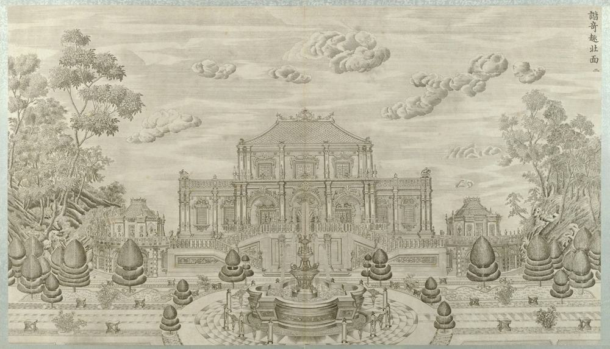
Then and now


nearly the same view: North side on the axis with the same scalloped basin in front. 1873: full north front with upper blocks, double stairs, two trees, basin broken. Today: front down to low block walls, trees and lamp posts; basin whole; whether repaired or rebuilt is not known.


nearly the same view: East end, Ohlmer 1873 and Child (Commons 1877-78). Same building face and collapsed arcade at foot; Child frames tighter, with roofline balustrade full width. No large change at this size.


nearly the same view: Whole front and upper storeys are down by P0172: pier, columns and rubble stand where the front was. Same water.

roughly the same view: Both across the pool from the south. 1873: three-storey block standing beyond reeds. 2013: blocks and stumps, one pier in front, trees behind, no building above ground floor; pool iced and clear of reeds.
Pictures by side
South façade


North façade


East façade


Plans and views from above

Ruins today


More pictures, and the texts, in the 3D view's panel.
Not ours to copy, at the holder
- Ruins of Yuanming Yuan, Summer Palace, Peking, NA01-76 View at hpcbristol.net
- 圓明園の廢墟（北京郊外）, 亜東印画輯 vol. 2, 163 View at commons.wikimedia.org
- Xiyang Lou plates, Getty set: The European Pavilions at the Garden of Perfect Clarity View at getty.edu
- Xiyang Lou plates, V&A: The Twenty Views of the ... (prints, Yi Lantai) View at collections.vam.ac.uk
- Sirén: Yuanmingyuan (Old summer palace): Ruins. View at kulturarvsdata.se
- Sirén: Yuanmingyuan (Old Summer Palace): Ruins. View at kulturarvsdata.se
- Sirén: Yuanmingyuan (Old Summer Palace): Ruins. View at kulturarvsdata.se
What is known of its size
| Part | What | Size | How | Grade | Source |
|---|---|---|---|---|---|
| main block | Depth | 8.64 m ± 4 | b ruin or plan | C | S01, plan px x 8816-8942, y 1465-1506 |
| main block | Frontage | 27.19 m ± 4 | b ruin or plan | C | S01, plan px x 8816-8942, y 1465-1506 |
| main block, north | Frontage | 27.2 m ± 4.9 | c engraving | C | S71, S70, S01, plate 2, P0042 |
| main block, south | Frontage | 27.2 m ± 4.9 | c engraving | C | S71, S70, S01, plate 1, P0041 |
| east flank, pier to pier | Depth | 15.6 m ± 4.2 | d photograph | C | S70, photo P0165 |
| main block, north, wing to wing | Frontage | 23.8 m ± 5.3 | d photograph | C | S89, S90, S70, photo P0189 |
| main block, ridge, best of plates 1-2 | Ridge or top height | 18.3 m ± 1.8 | c engraving | C | S71, S70, plates 1 and 2 |
| main block, top eave, best of plates 1-2 | Cornice height | 15.1 m ± 1.5 | c engraving | C | S71, S70, plates 1 and 2 |
| ridge above ground | Ridge or top height | 17.6 m ± 3.2 | c engraving | C | S71, S70, S01, plate 2, P0042 |
| ridge above ground | Ridge or top height | 19 m ± 3.4 | c engraving | C | S71, S70, S01, plate 1, P0041 |
| rusticated base, to floor of the upper storey | Terrace height | 5.5 m ± 1 | c engraving | C | S71, S70, S01, plate 1, P0041 |
| side terrace floor | Terrace height | 2.4 m ± 0.4 | c engraving | C | S71, S70, S01, plate 2, P0042 |
| top eave above ground | Cornice height | 13.9 m ± 2.5 | c engraving | C | S71, S70, S01, plate 2, P0042 |
| top eave above ground | Cornice height | 16.3 m ± 2.9 | c engraving | C | S71, S70, S01, plate 1, P0041 |
All 56 figures
| Part | What | Size | How | Grade | Source |
|---|---|---|---|---|---|
| north fountain pool (菊花式) | Diameter | 4.5 m ± 0.1 | e no survey | B | S310, mhymy /dasl/ysltd/7603.html, search extract |
| octagon, west | Diameter | 8.64 m ± 4 | b ruin or plan | C | S01, plan px x 8722-8762, y 1580-1620 |
| octagon, crown | Ridge or top height | 12.5 m ± 2.8 | c engraving | C | S71, S70, plate 1, P0041 |
| octagon, lower cornice | Cornice height | 4.5 m ± 1 | c engraving | C | S71, S70, plate 1, P0041 |
| octagon, seen beyond the block | Diameter | 9 m ± 2 | c engraving | C | S71, S70, plate 2, P0042 |
| west octagon, body | Diameter | 8.9 m ± 2 | c engraving | C | S71, S70, plate 1, P0041 |
| pool as visible today | Pool depth (N-S or along) | 16.22 m ± 3 | b ruin or plan | B | S850, S850 view |
| pool as visible today | Pool width | 35.61 m ± 3 | b ruin or plan | B | S850, S850 view |
| scalloped pool | Pool depth (N-S or along) | 13.15 m ± 4 | b ruin or plan | C | S01, plan px x 8816-8942, y 1579-1640 |
| scalloped pool | Pool width | 27.3 m ± 4 | b ruin or plan | C | S01, plan px x 8816-8942, y 1579-1640 |
| octagon, east | Diameter | 8.65 m ± 4 | b ruin or plan | C | S01, plan px x 8998-9038, y 1582-1622 |
| buildings of 谐奇趣, footprint as printed | Footprint m2 | 235 m² | a survey | C | S108, p.75 |
| cornices of main block, corridor and music pavilion | Height diff cornice | 0.02 m ± 0.01 | a survey | B | S108, p.77, Fig.8 |
| scenic area of 谐奇趣 | Site area m2 | 9956 m² | a survey | B | S108, p.75 |
| centre to centre of the two octagonal pavilions | Octagon spacing | 61.76 m ± 4 | b ruin or plan | B | S850, S850 view |
| main block to octagons, whole width at the octagons' outer sides | Whole d | 28.28 m ± 4 | b ruin or plan | C | S01, plan px x 8722-9038, y 1490-1622 |
| main block to octagons, whole width at the octagons' outer sides | Whole w | 68.37 m ± 4 | b ruin or plan | C | S01, plan px x 8722-9038, y 1490-1622 |
| offset of the row from the ruin | Row offset | 4.01 m ± 4 | b ruin or plan | B | S01, S850, buildings.csv row against ruin |
| ruin polygon: main block, podium, rubble | Ruin polygon long | 39.7 m ± 2 | b ruin or plan | B | S03, osm-way-584882151 |
| south double stair and landing | Stair run | 15.17 m ± 4 | b ruin or plan | C | S01, plan px x 8841-8916, y 1506-1577 |
| south double stair and landing | Stair width | 16.22 m ± 4 | b ruin or plan | C | S01, plan px x 8841-8916, y 1506-1577 |
| two hatched squares north of the block: outer width, depth | North stairs d | 8.76 m ± 4 | b ruin or plan | C | S01, plan px x 8825-8932, y 1386-1428 |
| two hatched squares north of the block: outer width, depth | North stairs w | 23.01 m ± 4 | b ruin or plan | C | S01, plan px x 8825-8932, y 1386-1428 |
| balustrade | Balustrade h | 1.2 m ± 0.2 | c engraving | C | S71, S70, S01, plate 2, P0042 |
| main block, south | Bay width | 3.2 m ± 0.6 | c engraving | C | S71, S70, S01, plate 1, P0041 |
| north double stair, rise to top landing | Stair rise | 5.1 m ± 0.9 | c engraving | C | S71, S70, S01, plate 2, P0042 |
| north, centre bays | Bay width | 4.4 m ± 0.8 | c engraving | C | S71, S70, S01, plate 2, P0042 |
| north, centre block | Centre block w | 14.4 m ± 2.6 | c engraving | C | S71, S70, S01, plate 2, P0042 |
| north, wing bays | Bay width | 3 m ± 0.5 | c engraving | C | S71, S70, S01, plate 2, P0042 |
| octagons centre to centre, as drawn | Octagon spacing | 38.4 m ± 8.6 | c engraving | C | S71, S70, plate 1, P0041 |
| upper centre block, south | Centre block w | 13.8 m ± 2.5 | c engraving | C | S71, S70, S01, plate 1, P0041 |
| wing cornice above ground | Wing cornice | 8.8 m ± 1.6 | c engraving | C | S71, S70, S01, plate 2, P0042 |
| wing cornice above ground | Wing cornice | 11.2 m ± 2 | c engraving | C | S71, S70, S01, plate 1, P0041 |
| east flank cornice above sill | Wing cornice | 8.2 m ± 2.2 | d photograph | C | S70, photo P0165 |
| east flank rail top above sill | Rail top | 10.4 m ± 2.8 | d photograph | C | S70, photo P0165 |
| wing cornice above door sill | Wing cornice | 7.5 m ± 1.7 | d photograph | C | S89, S90, S70, photo P0189 |
| offset of the row from the ruin | Row offset | 6.14 m ± 4 | b ruin or plan | B | S01, S850, buildings.csv row against ruin |
| octagon, top eave | Upper eave | 9.3 m ± 2.1 | c engraving | C | S71, S70, plate 1, P0041 |
| central stone fish | Fish length | 1.65 m ± 0.02 | a survey | B | S840, page |
| offset of the row from the ruin | Row offset | 3 m ± 4 | b ruin or plan | B | S01, S850, buildings.csv row against ruin |
| stone fish in the 海棠式 pool | Fish length | 1.65 m ± 0.02 | e no survey | B | S310, mhymy /ymss/jcww/5301.html, 谐奇趣翻尾石鱼, search extract |
| offset of the row from the ruin | Row offset | 0.25 m ± 4 | b ruin or plan | B | S01, S850, buildings.csv row against ruin |
Where the fragments are
- North fountain basin of 谐奇趣, cut into blocks for the move; saw cuts still visible
Now at: Back on its original spot at 谐奇趣. Moved: Stood in 翠园 (太平胡同一号, 东城区 翠花胡同, 民盟中央 seat); given to the park by 民盟中央 1985; set back 1987. - Stone carvings of 谐奇趣, part returned
Now at: Part in the park; rest not stated. Moved: 1970s from the Xiyang Lou site to 地安门西大街153号院; part returned July 2006. - 翻尾石鱼: yellow-brown fine stone, scaled body, mouth to the sky, 165 cm long, 87 cm high, belly 90 cm wide, mouth 42 cm
Now at: Peking University, west side of 未名湖. Moved: Sold after 1860; bought by 载涛 and kept at 朗润园; bought by the Yenching class of 1930 and given to the university (《平西报》, 《燕京新闻》); pushed into the lake in the Cultural Revolution; found summer 1981 when the lake was drained, tail and mouth broken, repaired.
蓄水楼 Xushui LouBuilding for Gathering the Waters
See it in the 3D viewWhat it was
The water works of 谐奇趣: a small two-storey block of 5 bays with a one-storey wing to the north, 3 bays in a search extract, facing east on the court north of 谐奇趣 (S02 p.143, S258 p.177; S310). The description Delatour prints, by his friend Père Avril, titles the plate "Château-d'eau, or Machine du Val-Saint-Pierre". Water came by culvert from the north sluice, was lifted by a mule-turned wheel and pump to a tin-lined tank upstairs, and ran by copper pipe to the fountains (S600; S310 from a search extract). The wheel failed in 1763 and windlasses replaced it; in 1795 the disused machines were ordered reused as metal and timber (S600).
After 1860
No dated event of its loss was found. Sirén photographed the ruin in 1922 (P0176). The press calls another building 蓄水楼 too, the tank block of 海晏堂: dates must not be carried from one to the other.
What survives
Nothing located in our sources; its place is known only from the plan, to about 15 m.
The engraving

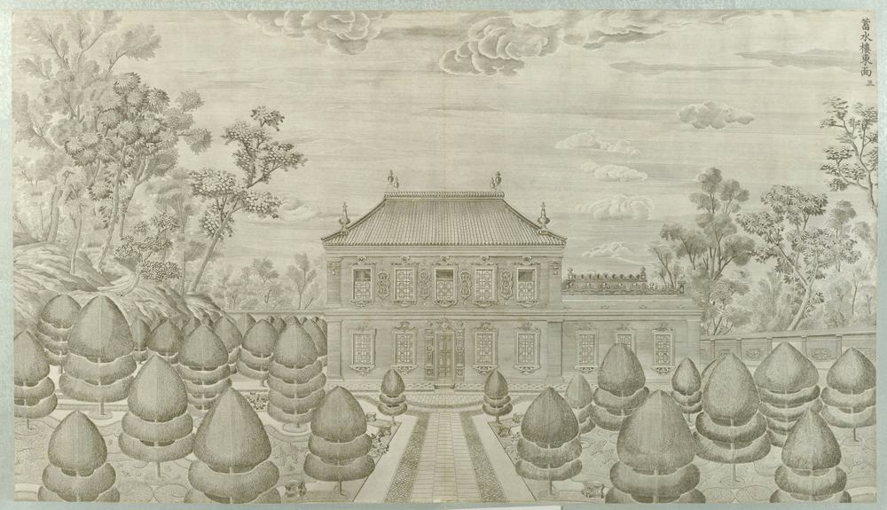
Pictures by side
East façade

South façade
North façade

Plans and views from above
Ruins today

More pictures, and the texts, in the 3D view's panel.
What is known of its size
| Part | What | Size | How | Grade | Source |
|---|---|---|---|---|---|
| five-bay range | Depth | 6.63 m ± 4 | b ruin or plan | C | S01, plan px x 8690-8721, y 1037-1134 |
| five-bay range | Frontage | 20.11 m ± 4 | b ruin or plan | C | S01, plan px x 8690-8721, y 1037-1134 |
| whole east front | Frontage | 20.1 m ± 4.5 | c engraving | C | S71, S70, S01, plate 3, P0043 |
| main cornice | Cornice height | 7.3 m ± 1.6 | c engraving | C | S71, S70, S01, plate 3, P0043 |
| ridge, raw, no setback | Ridge or top height | 10.1 m ± 2.3 | c engraving | C | S71, S70, S01, plate 3, P0043 |
All 16 figures
| Part | What | Size | How | Grade | Source |
|---|---|---|---|---|---|
| 蓄水楼 pool, ordinary water depth | Water depth | 1.02 m ± 0.1 | a survey | A | S600, n.46, citing 《圆明园》 上 p.132 |
| block | Bay width | 2.2 m ± 0.5 | c engraving | C | S71, S70, S01, plate 3, P0043 |
| ground storey | Storey height | 3.4 m ± 0.8 | c engraving | C | S71, S70, S01, plate 3, P0043 |
| one-storey north wing | Wing w | 7.3 m ± 1.6 | c engraving | C | S71, S70, S01, plate 3, P0043 |
| two-storey block | Block w | 12.8 m ± 2.9 | c engraving | C | S71, S70, S01, plate 3, P0043 |
| upper storey | Storey height | 4 m ± 0.9 | c engraving | C | S71, S70, S01, plate 3, P0043 |
| wing | Bay width | 2.1 m ± 0.5 | c engraving | C | S71, S70, S01, plate 3, P0043 |
| wing cornice | Wing cornice | 4.1 m ± 0.9 | c engraving | C | S71, S70, S01, plate 3, P0043 |
| wing rail top | Rail top | 5.8 m ± 1.3 | c engraving | C | S71, S70, S01, plate 3, P0043 |
| upper tank (锡海) | Water depth | 1.02 m ± 0.05 | e no survey | B | S310, mhymy /xsjl/14041.html, search extract |
| windlass ropes (four) | Rope length | 10.56 m ± 0.1 | e no survey | B | S310, mhymy /xsjl/14041.html, search extract |
Where the fragments are
No moved piece is documented for it in what we read.
花园门 Huayuan MenFlower Garden Gate
See it in the 3D viewWhat it was
The south gate of the maze: an arch with two columns and an entablature, two crouching lions on cippi, and a panelled wall carried on a small bridge (S258 p.178). Malone's description of the wall: grey brick cut smooth, with a large pattern in pink and deep cream (S02 pp.143-144). Plate 4 shows its north side, from inside the maze garden.
After 1860
Ohlmer photographed the south side in 1873 with people sitting by it (P0184), the only view of that face we found. It carries a pierced fan-light in the arch. Its later fate is not stated in our sources.
What survives
No arch stands in any modern picture we have seen. Two finial piers stand on the axis (P0736 and later rows); whether they are old is unknown.
The engraving
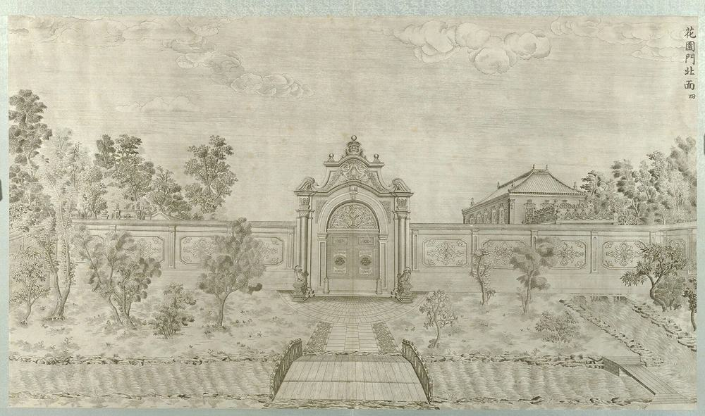
Then and now


nearly the same view: Same axis towards the maze pavilion. 1873: 花园门 arch with iron fan-light, wall each side, two finial piers and the domed pavilion seen through it, four men seated. Now: no arch in any modern picture seen; the two piers and a rebuilt pavilion stand, visitors, smooth paving.
Pictures by side
Plans and views from above
Ruins today

More pictures, and the texts, in the 3D view's panel.
Not ours to copy, at the holder
- Sirén: Yuanmingyuan (Old Summer Palace): Ruins. View at kulturarvsdata.se
- Sirén: Yuanmingyuan (Old Summer Palace): Ruins. Enligt text på fotokuvert: Yuanmingyuan. Gamla Sommarpalatset. View at kulturarvsdata.se
What is known of its size
| Part | What | Size | How | Grade | Source |
|---|---|---|---|---|---|
| gate | Depth | 4.16 m ± 4 | b ruin or plan | C | S01, plan px x 8856-8893, y 915-935 |
| gate | Frontage | 7.85 m ± 4 | b ruin or plan | C | S01, plan px x 8856-8893, y 915-935 |
| gate on plate 5 | Frontage | 12.3 m ± 2.7 | c engraving | C | S71, S70, plate 5, P0045 |
| gate, north | Frontage | 7.8 m ± 2.1 | c engraving | C | S71, S70, S01, plate 4, P0044 |
| gate, south | Frontage | 5.7 m ± 1.3 | d photograph | C | S89, S90, S70, photo P0184 |
| cornice | Cornice height | 6.7 m ± 1.8 | c engraving | C | S71, S70, S01, plate 4, P0044 |
| flanking wall | Wall height | 4.8 m ± 1.3 | c engraving | C | S71, S70, S01, plate 4, P0044 |
| pediment shoulder | Ridge or top height | 9 m ± 2.4 | c engraving | C | S71, S70, S01, plate 4, P0044 |
| cornice above plinth foot | Cornice height | 4.5 m ± 1 | d photograph | C | S89, S90, S70, photo P0184 |
| flanking wall | Wall height | 2.8 m ± 0.6 | d photograph | C | S89, S90, S70, photo P0184 |
| pediment crown | Ridge or top height | 6.3 m ± 1.4 | d photograph | C | S89, S90, S70, photo P0184 |
All 17 figures
| Part | What | Size | How | Grade | Source |
|---|---|---|---|---|---|
| offset of the row from the ruin | Row offset | 16.7 m ± 4 | b ruin or plan | B | S01, S850, buildings.csv row against ruin |
| arch crown inside | Arch h | 6.1 m ± 1.6 | c engraving | C | S71, S70, S01, plate 4, P0044 |
| crowning ball top | Top | 10.5 m ± 2.8 | c engraving | C | S71, S70, S01, plate 4, P0044 |
| door leaves | Door w | 3 m ± 0.8 | c engraving | C | S71, S70, S01, plate 4, P0044 |
| door rectangle | Door h | 4 m ± 1.1 | c engraving | C | S71, S70, S01, plate 4, P0044 |
| door frame | Door w | 2.1 m ± 0.5 | d photograph | C | S89, S90, S70, photo P0184 |
Where the fragments are
No moved piece is documented for it in what we read.
黄花阵 Huanghua ZhenFlower Garden, a maze
See it in the 3D viewWhat it was
A walled labyrinth. The plates call it 花园, the memorials and drawings 黄阵 or 黄花灯, and from the Guangxu reign it is 万花阵 (S310). Carved brick walls about shoulder high, topped with little pines (S02 p.145): 1.2 m high, 0.6 m thick, about 1600 m in all, the block 88.64 × 58.56 m (S310; figures fall on whole Qing feet, so probably from an archive, but no page says so). At the centre a round stair base and an octagonal pavilion; at the north a two-storey hall overlooks it. In 1793 sods were laid on the walls by order, and in 1795 a tile-topped pavilion by the storerooms north of the maze was taken down (S310).
After 1860
The walls were lost after 1860, dates not found. The park rebuilt the maze in 1987-88 (S847); a search extract gives 1987 and 1989, moulded bricks because hand carving could not be repeated, and a redesigned centre pavilion (S310).
What survives
What stands is the rebuilding: useful for size and plan, not a survival. Today's outline measures 57 × 89 m, which fits S310. Nothing we read says whether it follows the old footing (Q66).
The engraving

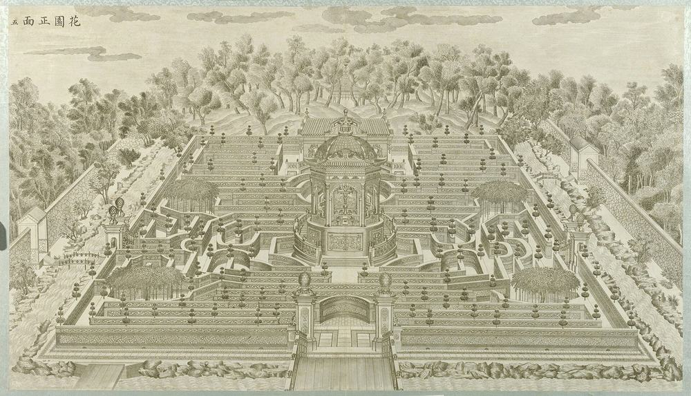
Pictures by side
Plans and views from above
Ruins today


More pictures, and the texts, in the 3D view's panel.
What is known of its size
| Part | What | Size | How | Grade | Source |
|---|---|---|---|---|---|
| maze hedges as drawn | Depth | 98.91 m ± 6 | b ruin or plan | C | S01, plan px x 8710-9060, y 420-890 |
| maze hedges as drawn | Frontage | 73.89 m ± 6 | b ruin or plan | C | S01, plan px x 8710-9060, y 420-890 |
| today's rebuilt maze, outer wall, E side | Depth | 89.51 m ± 3 | b ruin or plan | B | S850, S850 view, corners read |
| today's rebuilt maze, outer wall, N side | Frontage | 58.68 m ± 3 | b ruin or plan | B | S850, S850 view, corners read |
| today's rebuilt maze, outer wall, S side | Frontage | 55.51 m ± 3 | b ruin or plan | B | S850, S850 view, corners read |
| today's rebuilt maze, outer wall, W side | Depth | 88.37 m ± 3 | b ruin or plan | B | S850, S850 view, corners read |
| maze N-S, ground plane of the plate | Depth | 75.2 m ± 26.3 | c engraving | C | S71, S70, plate 5, P0045 |
| near wall | Frontage | 73.9 m ± 13.3 | c engraving | C | S71, S70, S01, plate 5, P0045 |
| 方阵 maze block, E-W | Frontage | 58.56 m ± 0.5 | e no survey | B | S310, mhymy /dasl/ysltd/7939.html, free text |
| 方阵 maze block, N-S | Depth | 88.64 m ± 0.5 | e no survey | B | S310, mhymy /dasl/ysltd/7939.html, free text |
| near wall band | Wall height | 3.1 m ± 0.7 | c engraving | C | S71, S70, S01, plate 5, P0045 |
| maze walls | Wall height | 1.2 m ± 0.1 | e no survey | B | S310, mhymy /dasl/ysltd/7939.html |
| maze walls, Malone | Wall height | 1.4 m ± 0.2 | e no survey | C | S02, p.145 |
| octagon | Diameter | 7.61 m ± 4 | b ruin or plan | C | S01, plan px x 8862-8898, y 670-706 |
All 34 figures
| Part | What | Size | How | Grade | Source |
|---|---|---|---|---|---|
| pavilion of the modern rebuild | Diameter | 6.57 m ± 1 | b ruin or plan | B | S03, osm-way-951712920 |
| round stair base, outer | Diameter | 21.13 m ± 4 | b ruin or plan | C | S01, plan px x 8830-8930, y 638-738 |
| central pavilion, body | Diameter | 7.7 m ± 1.7 | c engraving | C | S71, S70, plate 5, P0045 |
| north hall B0048 | Depth | 11.42 m ± 4 | b ruin or plan | C | S01, plan px x 8837-8926, y 432-486 |
| north hall B0048 | Frontage | 18.74 m ± 4 | b ruin or plan | C | S01, plan px x 8837-8926, y 432-486 |
| north hall | Frontage | 22.8 m ± 5.1 | c engraving | C | S71, S70, plate 5, P0045 |
| pavilion B0008 | Depth | 5.09 m ± 4 | b ruin or plan | C | S01, plan px x 8870-8896, y 291-315 |
| pavilion B0008 | Frontage | 5.47 m ± 4 | b ruin or plan | C | S01, plan px x 8870-8896, y 291-315 |
| offset of the row from the ruin | Row offset | 21.22 m ± 4 | b ruin or plan | B | S01, S850, buildings.csv row against ruin |
| outer wall line with the moat strips | Wall d | 103.66 m ± 6 | b ruin or plan | C | S01, plan px x 8678-9072, y 412-905 |
| outer wall line with the moat strips | Wall w | 83.21 m ± 6 | b ruin or plan | C | S01, plan px x 8678-9072, y 412-905 |
| maze walls | Wall thickness | 0.6 m ± 0.05 | e no survey | B | S310, mhymy /dasl/ysltd/7939.html |
| maze walls, total run | Wall total length | 1600 m ± 60 | e no survey | B | S310, mhymy /dasl/ysltd/7939.html |
| sod strip on the walls, 1793 | Sod length | 1444.16 m ± 1 | e no survey | B | S310, mhymy /dasl/ysltd/7939.html |
| whole scene: maze plus north hill and square pavilion | Site area m2 | 15000 m² ± 500 | e no survey | B | S310, mhymy /dasl/ysltd/7939.html |
| offset of the row from the ruin | Row offset | 29.82 m ± 4 | b ruin or plan | B | S01, S03, buildings.csv row against ruin |
| drum | Base d | 16 m ± 3.6 | c engraving | C | S71, S70, plate 5, P0045 |
| pavilion eaves | Eave d | 13.5 m ± 3 | c engraving | C | S71, S70, plate 5, P0045 |
| stair ring | Base d | 23.5 m ± 5.3 | c engraving | C | S71, S70, plate 5, P0045 |
| offset of the row from the ruin | Row offset | 30.43 m ± 4 | b ruin or plan | B | S01, S850, buildings.csv row against ruin |
Where the fragments are
No moved piece is documented for it in what we read.
养雀笼 Yangque LongBird Cage
See it in the 3D viewWhat it was
A gate between the court behind 谐奇趣 and the east garden, with birds kept in the side rooms: peacocks until the Jiaqing reign, according to the old caretaker Lu (S02 p.147). From the west it read almost as a Chinese five-roof archway, from the east as a European arch of three bays, with carved marble fountains either side of the door (S02 p.147; S310 from a search extract, which also gives 1759). The description Delatour prints, by his friend Père Avril, compares its capitals and niches with Borromini (S258 p.180); that is his comparison, not a documented model (Q59).
After 1860
Child and Sirén photographed the east gate (P0192, P0175). Malone prints it being pulled down about 1924 (S02 p.146). Four piers from its west gate went to a unit at 田村山南路 in the 1970s and returned in 2013 (S817). A dig of 2015 cleared about 1,000 m² (S141); a search extract adds the store court and copper fountain pipes (S310).
What survives
Half-round stones, carved blocks and two tall piers on site (P0352, 2013). The gate itself is gone.
The engraving

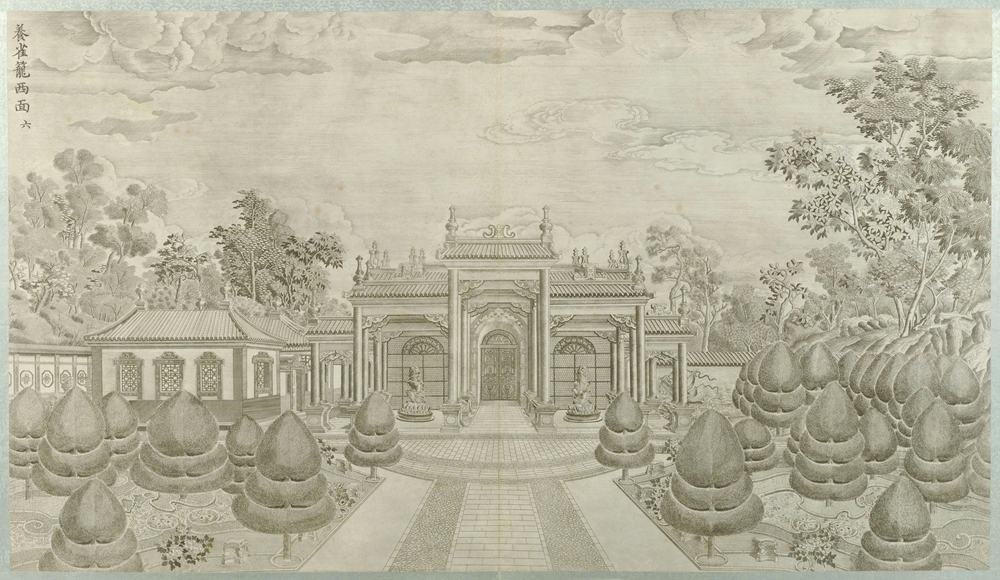

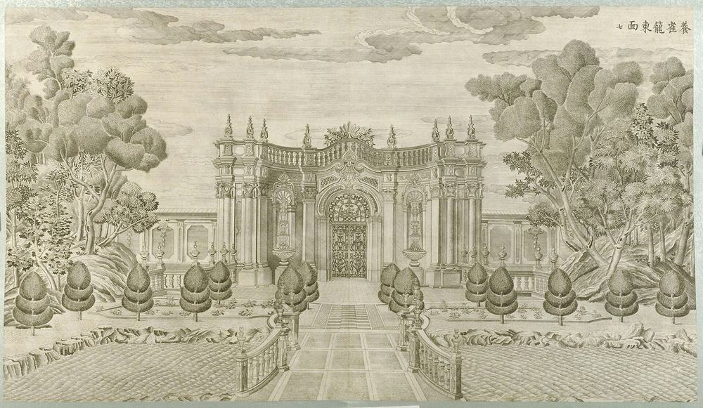
Then and now


nearly the same view: East gate frontal, Child 1870s and Sirén 1922?. 1870s: curved front with vases, balustrade and carved pilasters whole. Later: centre arch left in rough brick, facings stripped, blocks fallen in front.

roughly the same view: 1870s: the gate standing. 2005: gate gone; half-round shells and blocks at ground level.
Pictures by side
East façade


Plans and views from above
Ruins today


More pictures, and the texts, in the 3D view's panel.
Not ours to copy, at the holder
- Sirén, Enligt text under Pl. 189a Kinas trädgårdar Vol. I: Yuanmingyuan. Yangqiaolong, ”Rum för uppfödande av fåglar”, View at kulturarvsdata.se
- Moore negatives of the European palaces, Royal BC Museum MS-3171 (13 negatives, 12 views, c.1875 to early 1880s) View at search-bcarchives.royalbcmuseum.bc.ca
What is known of its size
| Part | What | Size | How | Grade | Source |
|---|---|---|---|---|---|
| gate range N-S with centre projection | Depth | 11.65 m ± 4 | b ruin or plan | C | S01, plan px x 9040-9095, y 1068-1135 |
| gate range N-S with centre projection | Frontage | 13.89 m ± 4 | b ruin or plan | C | S01, plan px x 9040-9095, y 1068-1135 |
| east front, piers | Frontage | 13.9 m ± 3.1 | c engraving | C | S71, S70, plate 7, P0047 |
| west front, three gates | Frontage | 13.9 m ± 3.1 | c engraving | C | S71, S70, S01, plate 6, P0046 |
| east, main cornice | Cornice height | 6.2 m ± 1.4 | c engraving | C | S71, S70, plate 7, P0047 |
| west, central roof ridge | Ridge or top height | 8.5 m ± 1.9 | c engraving | C | S71, S70, S01, plate 6, P0046 |
| west, flank eave | Cornice height | 5.8 m ± 1.3 | c engraving | C | S71, S70, S01, plate 6, P0046 |
| room block as drawn | Frontage | 3.13 m ± 3 | b ruin or plan | C | S01, plan x 9020-9035 |
| court with rooms round it | Depth | 12.32 m ± 4 | b ruin or plan | C | S01, plan px x 9020-9085, y 959-1018 |
| court with rooms round it | Frontage | 13.74 m ± 4 | b ruin or plan | C | S01, plan px x 9020-9085, y 959-1018 |
All 16 figures
| Part | What | Size | How | Grade | Source |
|---|---|---|---|---|---|
| east, centre arch inside | Arch h | 4.5 m ± 1 | c engraving | C | S71, S70, plate 7, P0047 |
| east, columns | Column h | 4.3 m ± 1 | c engraving | C | S71, S70, plate 7, P0047 |
| east, crown top | Top | 8.4 m ± 1.9 | c engraving | C | S71, S70, plate 7, P0047 |
| east, rail top | Rail top | 7.2 m ± 1.6 | c engraving | C | S71, S70, plate 7, P0047 |
| west, finial top | Top | 10.1 m ± 2.3 | c engraving | C | S71, S70, S01, plate 6, P0046 |
| west, gate pitch | Bay width | 3.7 m ± 0.8 | c engraving | C | S71, S70, S01, plate 6, P0046 |
Where the fragments are
- Four stone piers 石墩 from the west gate of 养雀笼
Now at: Returned to the park 2013. Moved: 1970s to a unit at 田村山南路17号; returned 2013.
方外观 Fangwai GuanA Look Abroad
See it in the 3D viewWhat it was
A small two-storey building of 3 bays, facing south, known early as 水法三间楼 (S310 from a search extract). Durand's survey gives 14 × 7 × 13 m without its stairs (S603), though he adds that the roof rests on the plate alone. Curved stairs came down from the second floor at both sides; a bridge over the moat had carved marble scroll balustrades (S02 pp.147-148). Under the terrace there was a low room with a door and two grilled ovals (S258).
After 1860
It kept a Chinese-style roof after 1860, on the photographs of the 1870s and about 1880 (S838), and it is probably the unnamed pavilion with violet and green tiles of a witness in 1876 (S828; the tie is our inference). Cleared by the park's staff from 1976 on (S820, S847).
What survives
The stone frame of the doors and piers, and pieces of the stairs. Brick cores are gone.
The engraving

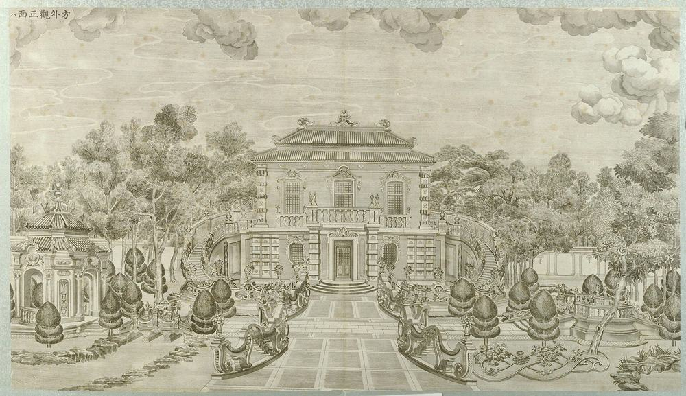
Then and now


roughly the same view: Same piers from nearer; stair and ovals no longer stand.


roughly the same view: Both from the south-west. 1873: two storeys, tiled roof on, double stair, trees. Today: only piers and stacks stand on the base, roof and walls gone.
Pictures by side
South façade


Plans and views from above
Ruins today


More pictures, and the texts, in the 3D view's panel.
Not ours to copy, at the holder
- Sirén, Yuanmingyuan: The ruins of Fangwaiguan (The Square Looking House). View at kulturarvsdata.se
- Fangwaiguan (S770 caption), Ohlmer negative G View at visualizingcultures.mit.edu
- Sirén, Enligt text under Pl. 190a Kinas trädgårdar Vol. I: Yuanmingyuan. Fangwaiguan, Belvedere, ”Plats med vidsträckt u View at kulturarvsdata.se
- Moore negatives of the European palaces, Royal BC Museum MS-3171 (13 negatives, 12 views, c.1875 to early 1880s) View at search-bcarchives.royalbcmuseum.bc.ca
What is known of its size
| Part | What | Size | How | Grade | Source |
|---|---|---|---|---|---|
| main block without the side stairs | Depth | 7 m ± 0.5 | a survey | B | S603, p.129 |
| main block without the side stairs | Frontage | 14 m ± 0.5 | a survey | B | S603, p.129 |
| hall | Depth | 5.95 m ± 4 | b ruin or plan | C | S01, plan px x 9360-9427, y 952-980 |
| hall | Frontage | 13.85 m ± 4 | b ruin or plan | C | S01, plan px x 9360-9427, y 952-980 |
| south porch | Depth | 7.39 m ± 4 | b ruin or plan | C | S01, plan px x 9375-9415, y 980-1015 |
| south porch | Frontage | 8.27 m ± 4 | b ruin or plan | C | S01, plan px x 9375-9415, y 980-1015 |
| main block | Frontage | 14 m ± 1.6 | c engraving | B | S71, S70, S603, plate 8, P0048 |
| facade, restituted | Ridge or top height | 13 m ± 1 | a survey | C | S603, p.129 |
| lower roof eave | Cornice height | 8.9 m ± 1 | c engraving | C | S71, S70, S603, plate 8, P0048 |
| ridge | Ridge or top height | 11.3 m ± 1.3 | c engraving | C | S71, S70, S603, plate 8, P0048 |
| pier with cornice | Cornice height | 3.7 m ± 0.4 | d photograph | C | S70, S603, photo P0355 |
| block as drawn | Depth | 4.83 m ± 2 | b ruin or plan | C | S01, plan px x 9112-9143, y 946-969 |
| block as drawn | Frontage | 6.53 m ± 2 | b ruin or plan | C | S01, plan px x 9112-9143, y 946-969 |
| bow-tie figure | Depth | 9.56 m ± 4 | b ruin or plan | C | S01, plan px x 9431-9508, y 1078-1124 |
All 28 figures
| Part | What | Size | How | Grade | Source |
|---|---|---|---|---|---|
| bow-tie figure | Frontage | 15.85 m ± 4 | b ruin or plan | C | S01, plan px x 9431-9508, y 1078-1124 |
| hall with both curved stairs | Whole d | 13.34 m ± 4 | b ruin or plan | C | S01, plan px x 9335-9454, y 952-1015 |
| hall with both curved stairs | Whole w | 24.6 m ± 4 | b ruin or plan | C | S01, plan px x 9335-9454, y 952-1015 |
| offset of the row from the ruin | Row offset | 16.97 m ± 4 | b ruin or plan | B | S01, S850, buildings.csv row against ruin |
| ruin polygon: hall, side stairs, moat bank | Ruin polygon long | 43.96 m ± 2 | b ruin or plan | B | S03, osm-way-584882149 |
| central porch | Porch w | 5.2 m ± 0.6 | c engraving | C | S71, S70, S603, plate 8, P0048 |
| door, a check | Door h | 3 m ± 0.3 | c engraving | C | S71, S70, S603, plate 8, P0048 |
| rusticated ground storey | Storey height | 3.9 m ± 0.3 | c engraving | B | S71, S70, S603, plate 8, P0048 |
| upper roof eave | Upper eave | 10.3 m ± 1.2 | c engraving | C | S71, S70, S603, plate 8, P0048 |
| upper storey | Upper w | 12.9 m ± 1.4 | c engraving | C | S71, S70, S603, plate 8, P0048 |
| with both curved stairs | Whole w | 23.8 m ± 2.7 | c engraving | B | S71, S70, S603, plate 8, P0048 |
| porch piers, outer faces | Porch w | 5.7 m ± 0.6 | d photograph | C | S70, S603, photo P0355 |
| rusticated pier | Storey height | 3.1 m ± 0.3 | d photograph | C | S70, S603, photo P0355 |
| tallest standing pier, ruin today | Ruin top | 7.6 m ± 0.8 | d photograph | C | S70, S603, photo P0355 |
Where the fragments are
No moved piece is documented for it in what we read.
五竹亭 Wuzhu TingBamboo Pavilions
See it in the 3D viewWhat it was
Five pavilions faced with bamboo, open all round, in a half circle joined by bamboo galleries, looking north towards 方外观 and its fountains (S258 p.181, S02 p.148). Plate 9 shows them as a U open to the viewer; a search extract gives 18 gallery bays in all (S310). The plan S01 does not draw them, only their beds and pool (Q15).
After 1860
Bamboo and timber, so probably burned in 1860, though no source says so. In Malone's time only two lotus pools, a fountain and the wall behind were left: "All traces of the pavilion itself have disappeared" (S02 p.149).
What survives
No trace located today, and we found no photograph of the pavilions: plate 9 is the only view we have.
The engraving

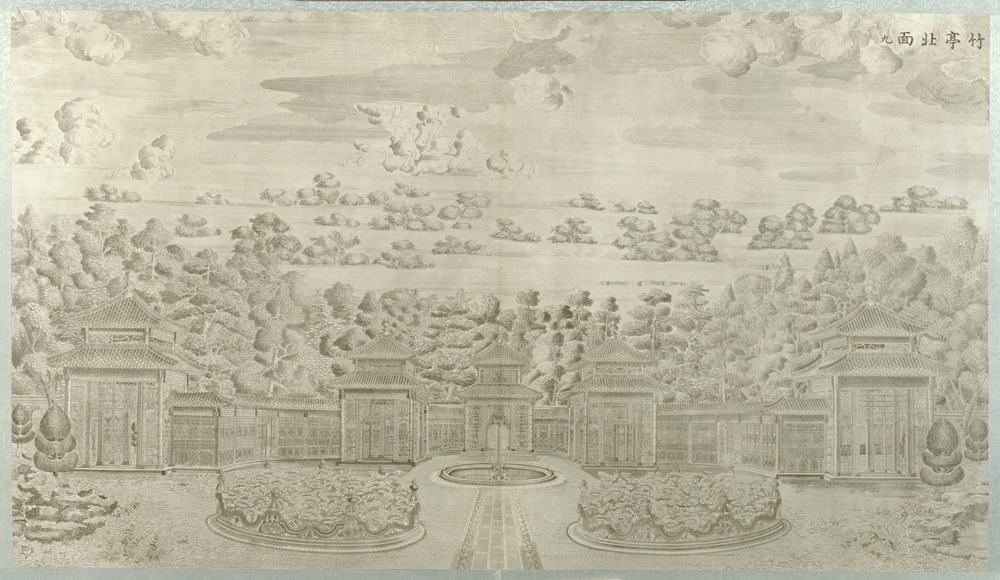
Pictures by side
Plans and views from above
Ruins today

More pictures, and the texts, in the 3D view's panel.
What is known of its size
| Part | What | Size | How | Grade | Source |
|---|---|---|---|---|---|
| end, lower eave | Cornice height | 7.4 m ± 2.3 | c engraving | C | S71, S70, plate 9, P0049 |
| end, ridge | Ridge or top height | 12.3 m ± 3.9 | c engraving | C | S71, S70, plate 9, P0049 |
| middle, lower eave | Cornice height | 6.7 m ± 2.1 | c engraving | C | S71, S70, plate 9, P0049 |
| middle, ridge | Ridge or top height | 11.2 m ± 3.5 | c engraving | C | S71, S70, plate 9, P0049 |
| block as drawn | Depth | 4.54 m ± 2 | b ruin or plan | C | S01, plan px x 9110-9138, y 1235-1257 |
| block as drawn | Frontage | 5.93 m ± 2 | b ruin or plan | C | S01, plan px x 9110-9138, y 1235-1257 |
All 13 figures
| Part | What | Size | How | Grade | Source |
|---|---|---|---|---|---|
| two kidney beds and the round pool, outer width | Beds d | 12.35 m ± 4 | b ruin or plan | C | S01, plan px x 9340-9445, y 1155-1215 |
| two kidney beds and the round pool, outer width | Beds w | 21.75 m ± 4 | b ruin or plan | C | S01, plan px x 9340-9445, y 1155-1215 |
| end pavilions | Pavilion w | 6.8 m ± 2.2 | c engraving | C | S71, S70, plate 9, P0049 |
| end pavilions, centres | Pavilion spacing | 54.5 m ± 17.2 | c engraving | C | S71, S70, plate 9, P0049 |
| middle pavilions | Pavilion w | 7 m ± 2.2 | c engraving | C | S71, S70, plate 9, P0049 |
| middle pavilions, centres | Pavilion spacing | 21.5 m ± 6.8 | c engraving | C | S71, S70, plate 9, P0049 |
| two beds, outer width | Beds w | 13.7 m ± 4.3 | c engraving | C | S71, S70, plate 9, P0049 |
Where the fragments are
No moved piece is documented for it in what we read.
海晏堂 Haiyan TangHall of Peaceful Seas
See it in the 3D viewWhat it was
The largest of the group. Basically finished by 1759 as 水法殿十一间楼; the board 海晏堂 hung only from 1781 (S310). It faced west with 11 bays on two levels, and two great stairs curved down to the pool, where cast copper animal heads on seated stone figures, six each side, spouted water: the water clock of the twelve hours (S02 p.153, S258 p.182, S823). Behind it an H-shaped block held Benoist's machines and the reservoir 锡海 of 27.36 × 5.92 × 1.44 m (S109; S06 for the width; depth S600) between two raised waterwheel houses, with zig-zag stairs at the east end; side fronts of 13 bays make a run of about 105 m (S02 p.155, S593, S604 through S415). In 1786 Bourgeois says that men carried water to fill "the immense basin of the château d'eau" before the emperor's visits, the machine having worn out (S258 p.166); he names no building, and this may or may not be this tank. In 1795 the disused machines were ordered reused as metal and timber (S600).
After 1860
Burned in October 1860. In 1873 Ohlmer photographed the west and north fronts still up to the parapet. The brick casing of the reservoir block, up to 5 m thick, was stripped over time and the block collapsed in the 1940s, leaving the rammed earth core (S593, S110). A dig of about 2015 found the waterwheel rooms and drains; 800 m² in a search extract (S310). The core was conserved about 2016-17 (S110, S821). Seven of the twelve heads are held in China today: ox, tiger, monkey and boar at the Poly Art Museum, horse at the park since 2020, rat and hare at the National Museum since 2013. The whereabouts of dragon, snake, goat, rooster and dog are unknown (S817, S822); one reprint repeats an unconfirmed report of the dragon head in Taiwan (S823). Which heads are held where: S822, S823, S815.
What survives
The stone stair walls and blocks of the west front, the pool's edge and the shell fountain's stones, and the earth core of the reservoir, 6.3-7.2 m high, the largest structure left in the ruins.
The engraving


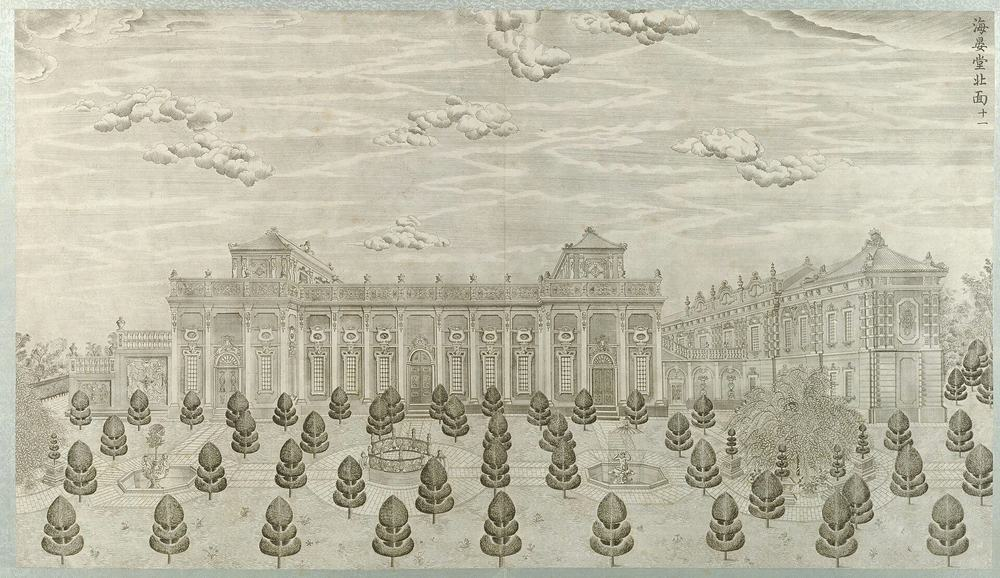

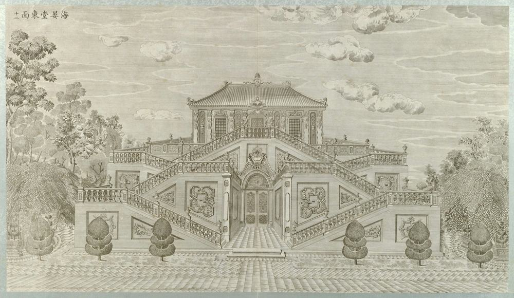

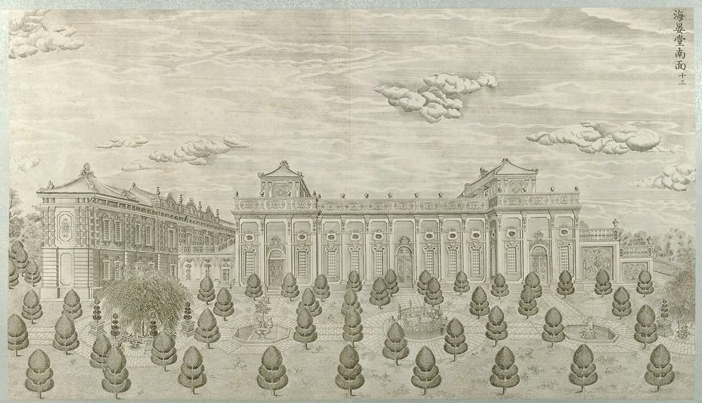
Then and now


nearly the same view: Same front on axis. 1873: two storeys, parapet with crest, shell fountain, birch and scrub. Today: only ground-floor piers on the base, upper storey and parapet gone, hedges and open ground.

roughly the same view: Rubble gone; pool edge exposed, piers stand on the terrace, shell not in this view.

roughly the same view: Stair walls largely gone: carved base panels and stacked blocks remain.
Pictures by side
West façade

South façade

North façade


Plans and views from above
Ruins today


More pictures, and the texts, in the 3D view's panel.
Not ours to copy, at the holder
- Sirén, Yuanmingyuan (Old Summer Palace): Haiyantang. Enligt text på fotokuvert: Yuanmingyuan. View at kulturarvsdata.se
- Sirén, Yuanmingyuan (Old Summer Palace): Haiyantang. Enligt text på fotokuvert: Yuanmingyuan. View at kulturarvsdata.se
- Haiyantang, west façade (S770 caption), Ohlmer negative H View at visualizingcultures.mit.edu
- Haiyantang, north façade (S770 caption), Ohlmer negative I View at visualizingcultures.mit.edu
- Moore negatives of the European palaces, Royal BC Museum MS-3171 (13 negatives, 12 views, c.1875 to early 1880s) View at search-bcarchives.royalbcmuseum.bc.ca
- Sirén: Illustrated: 272:209 (Imperial Palaces pl. 209) View at kulturarvsdata.se
- Sirén: Yuanmingyuan (Old summer palace): Ruins. View at kulturarvsdata.se
- Sirén: Enligt text på fotokuvert: Yuanmingyuan. View at kulturarvsdata.se
What is known of its size
| Part | What | Size | How | Grade | Source |
|---|---|---|---|---|---|
| north and south side facades | Frontage | 105 m ± 5 | a survey | B | S604, via S415, text after note 127 |
| H-shaped front hall | Depth | 11.44 m ± 4 | b ruin or plan | C | S01, plan px x 9776-9831, y 1092-1128 |
| H-shaped front hall | Frontage | 7.54 m ± 4 | b ruin or plan | C | S01, plan px x 9776-9831, y 1092-1128 |
| link east of the west block | Depth | 9.44 m ± 4 | b ruin or plan | C | S01, plan px x 9876-9967, y 1085-1130 |
| link east of the west block | Frontage | 19 m ± 4 | b ruin or plan | C | S01, plan px x 9876-9967, y 1085-1130 |
| terrace at the head of the stairs | Depth | 4.36 m ± 4 | b ruin or plan | C | S01, plan px x 9751-9772, y 1060-1155 |
| terrace at the head of the stairs | Frontage | 19.89 m ± 4 | b ruin or plan | C | S01, plan px x 9751-9772, y 1060-1155 |
| west block with the H hall | Depth | 22.7 m ± 4 | b ruin or plan | C | S01, plan px x 9776-9885, y 992-1217 |
| west block with the H hall | Frontage | 47.17 m ± 4 | b ruin or plan | C | S01, plan px x 9776-9885, y 992-1217 |
| west block, stepped outline | Depth | 8.96 m ± 4 | b ruin or plan | C | S01, plan px x 9842-9885, y 992-1217 |
| west block, stepped outline | Frontage | 47.18 m ± 4 | b ruin or plan | C | S01, plan px x 9842-9885, y 992-1217 |
| whole complex | Depth | 54.55 m ± 3 | b ruin or plan | B | S03, osm-way-584882147 |
| whole complex: west stairs and pool to east block | Frontage | 135.19 m ± 3 | b ruin or plan | B | S03, osm-way-584882147 |
| north, 13-bay range | Frontage | 38.9 m ± 12.3 | c engraving | C | S71, S70, S01, plate 11, P0051 |
All 84 figures
| Part | What | Size | How | Grade | Source |
|---|---|---|---|---|---|
| south, 13-bay range | Frontage | 39 m ± 12.3 | c engraving | C | S71, S70, S01, plate 13, P0053 |
| west front, 11 bays | Frontage | 47.2 m ± 6.7 | c engraving | C | S71, S70, S01, plate 10, P0050 |
| eaves | Cornice height | 13.2 m ± 1.9 | c engraving | C | S71, S70, S01, plate 10, P0050 |
| long ridge | Ridge or top height | 15.7 m ± 2.2 | c engraving | C | S71, S70, S01, plate 10, P0050 |
| north cornice | Cornice height | 9.3 m ± 2.9 | c engraving | C | S71, S70, S01, plate 11, P0051 |
| south cornice | Cornice height | 8.6 m ± 2.7 | c engraving | C | S71, S70, S01, plate 13, P0053 |
| terrace floor, head of the stairs | Terrace height | 7.2 m ± 1 | c engraving | C | S71, S70, S01, plate 10, P0050 |
| long hall with the label 海晏堂, holds the tank | Depth | 19.11 m ± 4 | b ruin or plan | C | S01, plan px x 10026-10154, y 1062-1153 |
| long hall with the label 海晏堂, holds the tank | Frontage | 26.84 m ± 4 | b ruin or plan | C | S01, plan px x 10026-10154, y 1062-1153 |
| reservoir core as it stands | Depth | 11.15 m ± 3 | b ruin or plan | B | S850, S850 view |
| reservoir core as it stands: flat top with a long shadow to the north | Frontage | 25.44 m ± 3 | b ruin or plan | B | S850, S850 view |
| rammed-earth core | Cornice height | 7.2 m ± 0.3 | a survey | B | S821, 蓄水楼 para |
| 锡海 reservoir, E-W | Pool width | 27.36 m ± 0.05 | e no survey | B | S310, mhymy, page not identified by the search tool; same figure in S109 and S06 as 8.55 丈, search extract |
| 锡海 reservoir, N-S | Pool depth (N-S or along) | 5.92 m ± 0.05 | e no survey | B | S310, mhymy, page not identified by the search tool, search extract |
| lens pool | Pool depth (N-S or along) | 15.28 m ± 4 | b ruin or plan | C | S01, plan px x 9649-9740, y 1069-1142 |
| lens pool | Pool width | 18.85 m ± 4 | b ruin or plan | C | S01, plan px x 9649-9740, y 1069-1142 |
| basin, near curve N-S | Pool depth (N-S or along) | 12.6 m ± 4 | c engraving | C | S71, S70, plate 10, P0050 |
| clam fountain in the centre of the zodiac basin | Cornice height | 2 m ± 0.3 | e no survey | C | S337, http://iqh.ruc.edu.cn/old/qdhjylyjzx/xszl/hwyj/c0279426b66e4f2bbdf9d8af7bd79e19.htm |
| south wing, mirror of B0154 | Depth | 6.44 m ± 3 | b ruin or plan | C | S01, plan px x 9808-9872, y 1176-1207 |
| south wing, mirror of B0154 | Frontage | 13.33 m ± 3 | b ruin or plan | C | S01, plan px x 9808-9872, y 1176-1207 |
| 西水?房 box | Depth | 13.39 m ± 4 | b ruin or plan | C | S01, plan px x 9967-10031, y 1046-1169 |
| 西水?房 box | Frontage | 25.81 m ± 4 | b ruin or plan | C | S01, plan px x 9967-10031, y 1046-1169 |
| east block as stone heap | Depth | 18.31 m ± 4 | b ruin or plan | C | S850, S850 view |
| east block as stone heap | Frontage | 22.3 m ± 4 | b ruin or plan | C | S850, S850 view |
| east block, N and S parts with the passage | Depth | 23.12 m ± 4 | b ruin or plan | C | S01, plan px x 10154-10264, y 1051-1175 |
| east block, N and S parts with the passage | Frontage | 26.06 m ± 4 | b ruin or plan | C | S01, plan px x 10154-10264, y 1051-1175 |
| east front, stairs | Frontage | 26.1 m ± 4.7 | c engraving | C | S71, S70, S01, plate 12, P0052 |
| hall eaves | Cornice height | 10.3 m ± 1.9 | c engraving | C | S71, S70, S01, plate 12, P0052 |
| hall ridge | Ridge or top height | 13.6 m ± 2.5 | c engraving | C | S71, S70, S01, plate 12, P0052 |
| lowest landing floor | Terrace height | 3.5 m ± 0.6 | c engraving | C | S71, S70, S01, plate 12, P0052 |
| middle landing floor | Terrace height | 5.5 m ± 1 | c engraving | C | S71, S70, S01, plate 12, P0052 |
| top landing floor | Terrace height | 8.1 m ± 1.5 | c engraving | C | S71, S70, S01, plate 12, P0052 |
| H-shaped water building, base of tank, today | Ruin core h | 6.3 m ± 0.2 | a survey | A | S593, p.466, section 2.1 |
| scene: main building to east stairs | Site area m2 | 8100 m² ± 200 | a survey | B | S593, p.465 |
| the wall brick of water building | Brick lwh | 0.42 m ± 0.005 | a survey | A | S593, p.466 |
| north horseshoe stair | Stair run | 11.64 m ± 4 | b ruin or plan | C | S01, plan px x 9660-9735, y 1005-1060 |
| north horseshoe stair | Stair width | 15.52 m ± 4 | b ruin or plan | C | S01, plan px x 9660-9735, y 1005-1060 |
| side front, H hall to east block | Side front | 102.16 m ± 4 | b ruin or plan | C | S01, plan px x 9776-10264, y 1062-1153 |
| south horseshoe stair | Stair run | 11.37 m ± 4 | b ruin or plan | C | S01, plan px x 9665-9720, y 1160-1215 |
| south horseshoe stair | Stair width | 11.39 m ± 4 | b ruin or plan | C | S01, plan px x 9665-9720, y 1160-1215 |
| whole, from the slip's west edge to the east block | Whole d | 58.05 m ± 4 | b ruin or plan | C | S01, plan px x 9618-10264, y 980-1257 |
| whole, from the slip's west edge to the east block | Whole w | 134.97 m ± 4 | b ruin or plan | C | S01, plan px x 9618-10264, y 980-1257 |
| attic crown | Top | 17.2 m ± 2.4 | c engraving | C | S71, S70, S01, plate 10, P0050 |
| centre frontispiece | Porch w | 5.7 m ± 0.8 | c engraving | C | S71, S70, S01, plate 10, P0050 |
| corner pavilion roof | End roof w | 10.2 m ± 1.4 | c engraving | C | S71, S70, S01, plate 10, P0050 |
| north | Bay width | 3 m ± 1 | c engraving | C | S71, S70, S01, plate 11, P0051 |
| north attic crown | Top | 14.5 m ± 4.6 | c engraving | C | S71, S70, S01, plate 11, P0051 |
| north rail top | Rail top | 10.8 m ± 3.4 | c engraving | C | S71, S70, S01, plate 11, P0051 |
| south attic crown | Top | 14.3 m ± 4.5 | c engraving | C | S71, S70, S01, plate 13, P0053 |
| south rail top | Rail top | 10.2 m ± 3.2 | c engraving | C | S71, S70, S01, plate 13, P0053 |
| west front | Bay width | 4.3 m ± 0.6 | c engraving | C | S71, S70, S01, plate 10, P0050 |
| board 海晏堂 in the lower hall | Board length | 1.82 m ± 0.01 | e no survey | B | S310, mhymy /dasl/ysltd/12168.html |
| brick casing of water building, removed | Wall thickness | 5 m ± 0.5 | e no survey | C | S110, palace_r5_tmp_recon_scenes/pg_82aa3a8d4455.html, quote in the news |
| rammed-earth core today, second figure | Ruin core h | 7.2 m ± 0.3 | e no survey | B | S110, 人民网 2016-07-28 |
| rammed-earth core under the tank, top | Ruin core top len | 27 m ± 1 | a survey | A | S593, p.466, section 2.1 |
| reservoir 锡海 | Water depth | 1.44 m ± 0.1 | a survey | A | S600, n.46, p.2416, citing a Qing drawing in 郭黛姮, 贺艳 2016 p.85 |
| offset of the row from the ruin | Row offset | 8.95 m ± 4 | b ruin or plan | B | S01, S850, buildings.csv row against ruin |
| core, lower course | Core w | 11.1 m ± 3 | d photograph | C | S70, photo P0349 |
| core, top course | Core w | 13.4 m ± 3.6 | d photograph | C | S70, photo P0349 |
| 锡海 core remains, ground to top | Core h | 7.1 m ± 1.9 | d photograph | C | S70, photo P0349 |
| 锡海 reservoir volume, Koenig | Volume m3 | 315 m³ ± 10 | e no survey | C | S736, mhymy /xsjl/1189.html, 講座紀要 of Albert Koenig (黃立人), search extract |
| 锡海 reservoir volume, one source | Volume m3 | 160 m³ ± 10 | e no survey | C | S310, mhymy /xgjy/3705.html and related (page inferred from the search tool, not confirmed), search extract |
| 锡海 reservoir, depth | Water depth | 1.44 m ± 0.02 | e no survey | B | S310, mhymy, page not identified by the search tool, search extract |
| bronze head, each of four | Head height | 0.5 m ± 0.05 | a survey | B | S849, second para |
| offset of the row from the ruin | Row offset | 7.15 m ± 4 | b ruin or plan | B | S01, S850, buildings.csv row against ruin |
| plinth under the figures | Plinth h | 1.5 m ± 0.5 | c engraving | C | S71, S70, plate 10, P0050 |
| offset of the row from the ruin | Row offset | 15.3 m ± 4 | b ruin or plan | B | S01, S850, buildings.csv row against ruin |
| east hall, body | Block w | 9.3 m ± 1.7 | c engraving | C | S71, S70, S01, plate 12, P0052 |
| lower flight, rise | Stair rise | 3.5 m ± 0.6 | c engraving | C | S71, S70, S01, plate 12, P0052 |
| lower flight, run | Stair run | 6.5 m ± 1.2 | c engraving | C | S71, S70, S01, plate 12, P0052 |
Where the fragments are
- Two long marble pieces, slightly curved, 须弥座 form: lotus petals above, S-scroll waist, bat at the lower centre, curling leaf at the corners
Now at: Peking University, either side of the road south of the west gate. Moved: Left the garden after its destruction, served as railing of 篓斗桥 on the 万泉河 outside the west wall; when the river moved they were set inside the gate. No dates.
远瀛观 Yuanying GuanView of Distant Seas
See it in the 3D viewWhat it was
The hall built for tapestries from France. Bourgeois calls them Gobelins, sent by the French court in 1767 (S258 pp.165, 183); Durand says six Beauvais tapestries after Boucher, offered by the missionaries (S603 p.123). Grey brick with carved white marble, two carved pillars before the door, five roofs, on a terrace set north of the park's wall line above the Great Fountains (S02 pp.155-156, S603). Durand's survey: terrace 35 × about 31 m, hall 21 × 28 m from the post grid, order not stated (S603). Dated 1783 in the archives (S42); a copper nozzle made for it in 1782 fits (S600), and Durand prefers 1768 from the Jesuits (S603): Q24. Bourgeois in 1786 has the new hall, 70 feet long, so full of machines one could hardly pass (S258).
After 1860
One French account, Varin's of 1862, has chambers lined with Gobelins bearing the arms of France in one palace "dans le style Louis XV"; the building is not named (S245). Burned that month. Malone prints the ruin in 1924 (p.156) and, undated, the two pillars with one fallen (p.154). By the 1980s the east, west and north edges of the base had collapsed (S603). A dig in 2016, 800 m², found the hall, stores, three phases of building and many glazed fittings (S153); a project announced in May 2018 was to strengthen the foundations of the standing stones by late September (S841).
What survives
The carved columns, the image most people have of the whole garden, with arches gone and the terrace partly collapsed.
The engraving

Then and now


nearly the same view: Same façade, nearly the same place, 1873 and 1876 (P0190 by file name). Cropped lower in P0190, so the clock crest is out of frame; walls, door and columns unchanged at this size.

roughly the same view: South side both. 1873: full clock gate with crest and wheel, brick wall and doorway, carved columns set in wall. 2007: gate and walls all gone; four free columns and a lintel stand on low stones.


roughly the same view: Arches gone; carved column and tall entablature stand; brick core cleared.


roughly the same view: Arches and rubble gone; four columns isolated.
Pictures by side
South façade


East façade

Plans and views from above
Details and fragments

Ruins today


More pictures, and the texts, in the 3D view's panel.
Not ours to copy, at the holder
- Dashuifa (Great Fountain) (S770 caption), Ohlmer negative K View at visualizingcultures.mit.edu
- 晚近之大水法 (第十三圖) View at commons.wikimedia.org
- 圓明園遺址, from Peking the Beautiful View at commons.wikimedia.org
- Sirén, Enligt text under Pl. 191a Kinas trädgårdar Vol. I: Yuanmingyuan. Yuanyingguan, ”Utblick över Fjärran Vatten”. Bi View at kulturarvsdata.se
- Moore negatives of the European palaces, Royal BC Museum MS-3171 (13 negatives, 12 views, c.1875 to early 1880s) View at search-bcarchives.royalbcmuseum.bc.ca
- Sirén: Yuanmingyuan (Old summer palace): Ruins. View at kulturarvsdata.se
- Sirén: Yuanmingyuan (Old summer palace): Ruins. View at kulturarvsdata.se
- Sirén: Yuanmingyuan (Old summer palace): Ruins. View at kulturarvsdata.se
What is known of its size
| Part | What | Size | How | Grade | Source |
|---|---|---|---|---|---|
| building footprint from the post grid | Depth | 28 m ± 0.5 | a survey | B | S603, p.132 |
| building footprint from the post grid | Frontage | 21 m ± 0.5 | a survey | B | S603, p.132 |
| hall B0096, 5 bays | Depth | 17.56 m ± 4 | b ruin or plan | C | S01, plan px x 10517-10615, y 780-865 |
| hall B0096, 5 bays | Frontage | 20.82 m ± 4 | b ruin or plan | C | S01, plan px x 10517-10615, y 780-865 |
| south front, 5 bays | Frontage | 28 m ± 3.4 | c engraving | B | S71, S70, S603, plate 14, P0054 |
| hall for the Gobelins tapestries, Bourgeois 1786 | Frontage | 22.7 m ± 1.5 | e no survey | B | S02, p.160, quoting Bourgeois 1786; original S258 pp.164-165, E0461 |
| raised terrace on which the marble base stands | Terrace depth | 31 m ± 2 | a survey | B | S603, p.131 |
| raised terrace on which the marble base stands | Terrace width | 35 m ± 2 | a survey | B | S603, p.131 |
| terrace as drawn | Terrace depth | 37.2 m ± 4 | b ruin or plan | C | S01, plan px x 10498-10622, y 765-945 |
| terrace as drawn | Terrace width | 26.33 m ± 4 | b ruin or plan | C | S01, plan px x 10498-10622, y 765-945 |
| centre roof apex | Ridge or top height | 12.4 m ± 1.5 | c engraving | C | S71, S70, S603, plate 14, P0054 |
| end pavilion cornice above floor | Cornice height | 5.3 m ± 0.7 | c engraving | C | S71, S70, S603, plate 14, P0054 |
| terrace between the side rails | Terrace width | 32.9 m ± 4.7 | c engraving | C | S71, S70, S603, plate 14, P0054 |
| north range, west | Depth | 7.9 m ± 4 | b ruin or plan | C | S01, plan px x 10431-10504, y 716-754 |
All 33 figures
| Part | What | Size | How | Grade | Source |
|---|---|---|---|---|---|
| north range, west | Frontage | 15.44 m ± 4 | b ruin or plan | C | S01, plan px x 10431-10504, y 716-754 |
| north range, centre | Depth | 3.72 m ± 4 | b ruin or plan | C | S01, plan px x 10518-10607, y 719-737 |
| north range, centre | Frontage | 18.91 m ± 4 | b ruin or plan | C | S01, plan px x 10518-10607, y 719-737 |
| north range, east | Depth | 7.02 m ± 4 | b ruin or plan | C | S01, plan px x 10620-10696, y 719-753 |
| north range, east | Frontage | 16.23 m ± 4 | b ruin or plan | C | S01, plan px x 10620-10696, y 719-753 |
| fence round the excavated site today | Site fence we | 63.64 m ± 3 | b ruin or plan | B | S850, S850 view |
| offset of the row from the ruin | Row offset | 28.02 m ± 4 | b ruin or plan | B | S01, S850, buildings.csv row against ruin |
| polygon that holds both 远瀛观's rubble and 大水法's niche and pool | Ruin polygon long | 59.18 m ± 2 | b ruin or plan | B | S03, S850, osm-way-584882143 |
| rubble of the hall N-S | Rubble core ns | 20.07 m ± 4 | b ruin or plan | C | S850, S850 view |
| rubble of the hall, dense core W-E | Rubble core we | 28.39 m ± 4 | b ruin or plan | C | S850, S850 view |
| carved columns | Column h | 4.9 m ± 0.6 | c engraving | C | S71, S70, S603, plate 14, P0054 |
| centre bays | Bay width | 4 m ± 0.5 | c engraving | C | S71, S70, S603, plate 14, P0054 |
| crown top | Top | 14.6 m ± 1.8 | c engraving | C | S71, S70, S603, plate 14, P0054 |
| outer bays | Bay width | 6.1 m ± 0.8 | c engraving | C | S71, S70, S603, plate 14, P0054 |
| tower top | Tower top | 12.1 m ± 1.5 | c engraving | C | S71, S70, S603, plate 14, P0054 |
| tower, clock-storey eave | Tower cornice | 9.7 m ± 1.2 | c engraving | C | S71, S70, S603, plate 14, P0054 |
| Macartney's great orrery shown at 远瀛观 | Orrery h | 4.8 m ± 0.3 | e no survey | C | S337, http://iqh.ruc.edu.cn/old/qdhjylyjzx/xszl/hwyj/c0279426b66e4f2bbdf9d8af7bd79e19.htm |
| inscribed board in the main hall of 远瀛观 | Board length | 2.56 m ± 0.01 | e no survey | B | S310, mhymy /xgjy/3705.html (page inferred from the search tool, not confirmed), search extract |
| whole scene 高台大殿 + 大水法 + 观水法 | Site area m2 | 10000 m² ± 500 | e no survey | C | S310, mhymy, page of 远瀛观 drawing or /xgjy/3705.html (page inferred from the search tool, not confirmed), search extract |
Where the fragments are
No moved piece is documented for it in what we read.
大水法 Da ShuifaThe Great Fountains
See it in the 3D viewWhat it was
The fountain set before 远瀛观. A huge stone niche with a lion-head cascade, seven steps of water, an oval basin where hounds spout at a stag, and two pyramid towers in quatrefoil basins (S258 pp.183-184; S603 p.127; S310 from a search extract). Durand's survey found the whole area to be 110 × 60 m, sunk 1.30 m below the gardens, against 90 m drawn by Jin Xun, with quatrefoil basins 18 m across and 62 m apart (S603). Finished with 海晏堂 by 1759 (S310, extract).
After 1860
After the sack the bricks were recovered from the buildings, and only the great marble blocks stayed, which is why this is the best-kept of the scenes (S603). A pair of stone fish, identified from photographs of the 1920s, was taken in the mid-1930s and returned to the park's exhibition hall in 2006-07 (S817, S815). Cleared in 1978-83 (S847); a dig was to reach it in 2016 (S141).
What survives
The arch of the niche, the basin stones and the two tower bases. Which stones are in place is not settled (S821).
The engraving

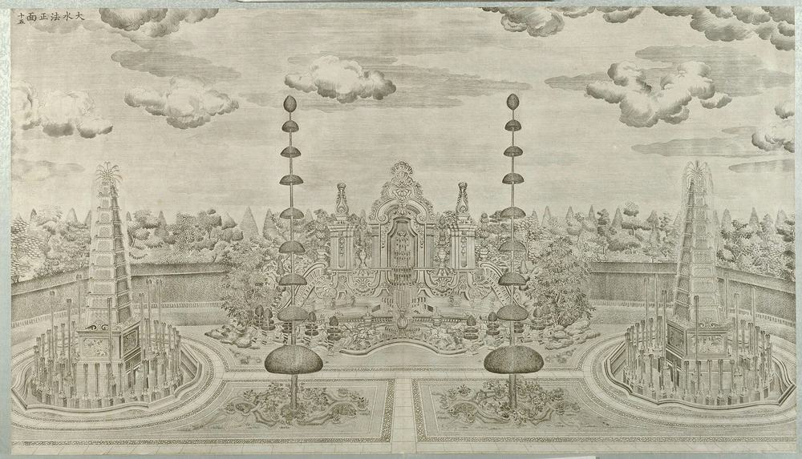
Then and now


nearly the same view: Rubble and reeds gone; basin blocks and buttresses exposed; XY09 behind is reduced to columns.

nearly the same view: As P0641, nearer.
nearly the same view: Both on the axis from the south. 1873: crest whole, side wall and balustrade, clock gate above, reeds. Today: crest gone, side wall gone, clock gate gone, ground bare.

roughly the same view: Same side, far further; ground cleared and hedged.
Pictures by side
South façade

East façade
Plans and views from above
Ruins today


More pictures, and the texts, in the 3D view's panel.
Not ours to copy, at the holder
- Dashuifa (Great Fountain) (S770 caption), Ohlmer negative K View at visualizingcultures.mit.edu
- 晚近之大水法 (第十三圖) View at commons.wikimedia.org
- Sirén, Enligt text under Pl. 192a Kinas trädgårdar Vol. I: Yuanmingyuan. Dashuifa ”De Stora Springvattnen”. Bild efter g View at kulturarvsdata.se
- Sirén: Yuanmingyuan (Old summer palace): Ruins. View at kulturarvsdata.se
What is known of its size
| Part | What | Size | How | Grade | Source |
|---|---|---|---|---|---|
| fountain + rockwork ensemble on the N-S axis | Frontage | 50 m ± 5 | a survey | B | S603, p.127 |
| arc behind the pool: the niche front | Depth | 4.36 m ± 4 | b ruin or plan | C | S01, plan px x 10511-10611, y 968-989 |
| arc behind the pool: the niche front | Frontage | 21.23 m ± 4 | b ruin or plan | C | S01, plan px x 10511-10611, y 968-989 |
| niche with scrolls | Frontage | 21.2 m ± 3.8 | c engraving | C | S71, S70, S01, plate 15, P0055 |
| sunken fountain area against the surrounding gardens | Terrace height | 1.3 m ± 0.1 | a survey | B | S603, p.127 and note 17 p.133 |
| shell pool | Pool depth (N-S or along) | 20.96 m ± 4 | b ruin or plan | C | S01, plan px x 10493-10632, y 996-1096 |
| shell pool | Pool width | 29.51 m ± 4 | b ruin or plan | C | S01, plan px x 10493-10632, y 996-1096 |
| shell pool as visible | Pool depth (N-S or along) | 16.42 m ± 3 | b ruin or plan | C | S850, S850 view |
| shell pool as visible | Pool width | 28.39 m ± 3 | b ruin or plan | B | S850, S850 view |
| crown top | Ridge or top height | 16.7 m ± 3 | c engraving | C | S71, S70, S01, plate 15, P0055 |
| square base of the pyramid | Depth | 4.22 m ± 4 | b ruin or plan | C | S01, plan px x 10408-10430, y 1107-1127 |
| square base of the pyramid | Frontage | 4.64 m ± 4 | b ruin or plan | C | S01, plan px x 10408-10430, y 1107-1127 |
| west quatrefoil basin with pyramid | Diameter | 18 m ± 1 | a survey | B | S603, p.127 |
| round pool, west | Diameter | 18.98 m ± 4 | b ruin or plan | C | S01, plan px x 10371-10461, y 1071-1161 |
All 42 figures
| Part | What | Size | How | Grade | Source |
|---|---|---|---|---|---|
| pyramid top above basin floor | Ridge or top height | 21.2 m ± 2.4 | c engraving | C | S71, S70, S603, plate 15, P0055 |
| west basin | Diameter | 19.2 m ± 1.7 | c engraving | B | S71, S70, S603, plate 15, P0055 |
| square base of the pyramid | Depth | 4.21 m ± 4 | b ruin or plan | C | S01, plan px x 10686-10708, y 1107-1127 |
| square base of the pyramid | Frontage | 4.72 m ± 4 | b ruin or plan | C | S01, plan px x 10686-10708, y 1107-1127 |
| east quatrefoil basin with pyramid | Diameter | 18 m ± 1 | a survey | B | S603, p.127 |
| round pool, east | Diameter | 18.65 m ± 4 | b ruin or plan | C | S01, plan px x 10654-10741, y 1076-1159 |
| centres of the two quatrefoil basins | Basin axis distance | 62 m ± 1 | a survey | B | S603, p.127 |
| stone fish, each | Fish length | 1.25 m ± 0.02 | a survey | B | S817, 石鱼 para |
| whole 大水法 fountain area (aire du buffet d'eau) | Area length ew | 110 m ± 5 | a survey | B | S603, p.127 (dims 110 x 60 m) |
| whole 大水法 fountain area (aire du buffet d'eau) | Area width ns | 60 m ± 5 | a survey | B | S603, p.127 |
| axis: niche to shell pool centre | Axis distance | 12.08 m ± 4 | b ruin or plan | B | S850, S03, S01, ruin readings and OSM point |
| axis: terrace centre to niche | Axis distance | 19.53 m ± 4 | b ruin or plan | B | S850, S03, S01, ruin readings and OSM point |
| offset of the row from the ruin | Row offset | 1.95 m ± 4 | b ruin or plan | B | S01, S850, buildings.csv row against ruin |
| offset of the row from the ruin (shell pool) | Row offset | 13.65 m ± 4 | b ruin or plan | B | S01, S850, buildings.csv row against ruin |
| west to east pool centres | Basin axis distance | 63.32 m ± 4 | b ruin or plan | B | S850, S850 view |
| whole fountain area between the N-S walls | Area length ew | 109.25 m ± 4 | b ruin or plan | C | S01, plan px x 10311-10825, y 985-1283 |
| whole fountain area between the N-S walls | Area width ns | 63.12 m ± 4 | b ruin or plan | C | S01, plan px x 10311-10825, y 985-1283 |
| whole fountain area, W end to E end | Area length ew | 108.76 m ± 4 | b ruin or plan | B | S850, S850 view |
| centre arch | Arch w | 6.9 m ± 1.3 | c engraving | C | S71, S70, S01, plate 15, P0055 |
| hedge | Hedge h | 5.3 m ± 1.4 | c engraving | C | S71, S70, S603, plate 15, P0055 |
| pier finial top | Pier top | 14.3 m ± 2.6 | c engraving | C | S71, S70, S01, plate 15, P0055 |
| side piers | Pier w | 3 m ± 0.6 | c engraving | C | S71, S70, S01, plate 15, P0055 |
| stone fish from 大水法 | Fish lwh | 1.26 m ± 0.02 | e no survey | B | S310, mhymy /ymss/jcww/6268.html, 大水法石鱼, search extract |
| tall clipped hedges at the top of the slopes | Hedge h | 2.5 m ± 0.3 | e no survey | C | S603, p.127 |
| offset of the row from the ruin | Row offset | 1.19 m ± 4 | b ruin or plan | B | S01, S850, buildings.csv row against ruin |
| pedestal | Pedestal h | 5 m ± 0.6 | c engraving | C | S71, S70, S603, plate 15, P0055 |
| pedestal | Pedestal w | 4.6 m ± 0.4 | c engraving | B | S71, S70, S603, plate 15, P0055 |
| offset of the row from the ruin | Row offset | 7.54 m ± 4 | b ruin or plan | B | S01, S850, buildings.csv row against ruin |
Where the fragments are
- Pair of stone fish, 125 cm long, 58 cm high, about 1 tonne each
Now at: 圆明园展览馆. Moved: Taken in the mid-1930s by 杨杰 to his house, 西单 横二条; noticed by park staff 2004 in a compound; returned November 2006.
观水法 Guan ShuifaView of the Fountains
See it in the 3D viewWhat it was
The emperor's seat, facing north across the Great Fountains: a throne with a canopy and a brick screen holding five marble panels of European arms (swords, armour, flags, drums, cannon), with clipped hedges and two gateways right and left (S02 pp.157-158). The plate draws the panels at a pitch that makes the screen about 8.4 m wide; on the ground it is about 14.4 m (P0343, S01).
After 1860
About 1910 eunuchs tried to sell the screens; 载涛 took them and the two obelisks to 朗润园, which is now within Peking University (S817; for marbles in 载涛's garden, S02 p.218). The park brought them back in 1977, the first dispersed stones to return (S310, S817).
What survives
Five panels and two obelisks standing, set up in 1977 by the park: a re-erection, so their place is not independent evidence. The brick backing is gone. The platform under the throne survives without its balustrades (S603 p.129; P0343).
The engraving

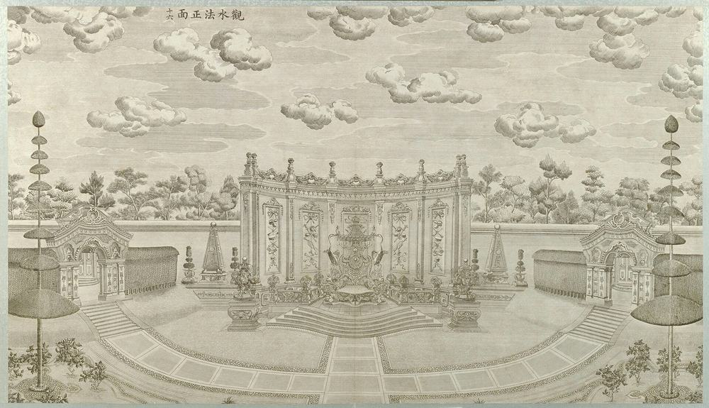
Then and now


nearly the same view: Slabs between panels gone; panels stand before a rubble-stone wall, base exposed.


nearly the same view: Rubble and earth cleared; base and stair exposed, rubble-stone wall behind.


roughly the same view: Opposite obliques. 1873: five panels and piers with their cornice, in grass and trees. Today: panels and piers without cornice, brick wall behind, stepped base cleared and visible.
Pictures by side
Plans and views from above
Details and fragments


Ruins today


More pictures, and the texts, in the 3D view's panel.
Not ours to copy, at the holder
- Guanshuifa (S770 caption), Ohlmer negative L View at visualizingcultures.mit.edu
- Sirén: The Imperial Palaces of Peking pl. 216 View at kulturarvsdata.se
What is known of its size
| Part | What | Size | How | Grade | Source |
|---|---|---|---|---|---|
| arc screen and platform | Depth | 11.46 m ± 4 | b ruin or plan | C | S01, plan px x 10521-10589, y 1225-1279 |
| arc screen and platform | Frontage | 14.46 m ± 4 | b ruin or plan | C | S01, plan px x 10521-10589, y 1225-1279 |
| screen on the plate | Frontage | 8.4 m ± 1.5 | c engraving | C | S71, S70, plate 16, P0056 |
| side gates, each | Frontage | 5.2 m ± 1.2 | c engraving | C | S71, S70, plate 16, P0056 |
| whole screen, outer pier to outer pier | Frontage | 14.4 m ± 1.9 | d photograph | C | S70, S603, photo P0343 |
| cornice | Cornice height | 4 m ± 0.7 | c engraving | C | S71, S70, plate 16, P0056 |
| steps, lowest | Terrace width | 6.4 m ± 1.4 | c engraving | C | S71, S70, plate 16, P0056 |
| panel top above ground | Cornice height | 4.3 m ± 0.5 | d photograph | C | S70, S603, photo P0343 |
All 21 figures
| Part | What | Size | How | Grade | Source |
|---|---|---|---|---|---|
| base of the wall of trophies (screen) | Screen base h | 1.3 m ± 0.1 | a survey | B | S603, note 17 p.133 |
| axis: niche to throne | Axis distance | 41.68 m ± 4 | b ruin or plan | B | S850, S03, S01, ruin readings and OSM point |
| axis: shell pool centre to throne (OSM point) | Axis distance | 29.69 m ± 4 | b ruin or plan | B | S850, S03, S01, ruin readings and OSM point |
| offset of the row from the ruin | Row offset | 4.57 m ± 4 | b ruin or plan | B | S01, S03, buildings.csv row against ruin |
| two side gates, centre to centre | Side gates | 33.86 m ± 4 | b ruin or plan | C | S01, S603, plan px (10483,1250) (10642,1247) |
| finials | Top | 5.1 m ± 0.9 | c engraving | C | S71, S70, plate 16, P0056 |
| panel top | Panel top | 3.5 m ± 0.6 | c engraving | C | S71, S70, plate 16, P0056 |
| rail top | Rail top | 4.5 m ± 0.8 | c engraving | C | S71, S70, plate 16, P0056 |
| throne with back | Throne h | 2.3 m ± 0.5 | c engraving | C | S71, S70, plate 16, P0056 |
| left pier | Pier h | 5.1 m ± 0.6 | d photograph | C | S70, S603, photo P0343 |
| middle panel frame | Panel h | 2.5 m ± 0.3 | d photograph | C | S70, S603, photo P0343 |
| middle panel frame | Panel w | 1.2 m ± 0.2 | d photograph | C | S70, S603, photo P0343 |
| panel pitch | Bay width | 2.5 m ± 0.3 | d photograph | C | S70, S603, photo P0343 |
Where the fragments are
- Five carved screen panels (European flags, armour, swords, guns) and two square stone obelisks 石方塔, the backdrop of the throne
Now at: On site, on their old spot at 观水法. Moved: About 1910 eunuchs tried to sell the screens; 载涛 expelled them and took screens and obelisks to his 朗润园 (later Peking University). Found there in the 1970s; set back in 1977.
线法山 Xianfa ShanHsien Fa Hill, of the line method
See it in the 3D viewWhat it was
A round artificial hill, about 8 m high (S310, extract; plate 18 reads 7.4 m), with intersecting circular paths up to a pavilion on top, and a triple gate like a triumphal arch at the west (S02 p.159). The plan labels it 转马台, "horse-turning terrace"; the caretaker Lu said the emperor rode up on horseback (S02 p.159). 线法 means line method, probably the Jesuits' perspective.
After 1860
Base sites were cleared in 1978-83 (S847). No secure ruin photograph of the gate has been found.
What survives
The mound and a base. The pavilion and gate are gone.
The engraving

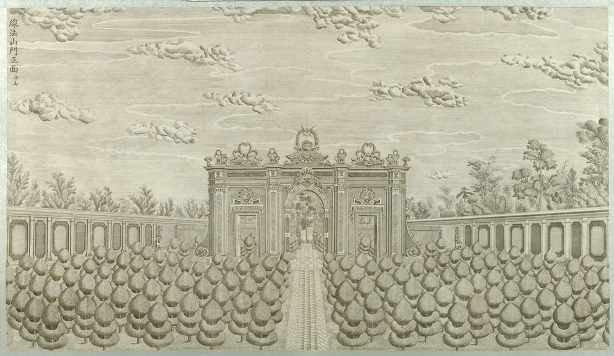

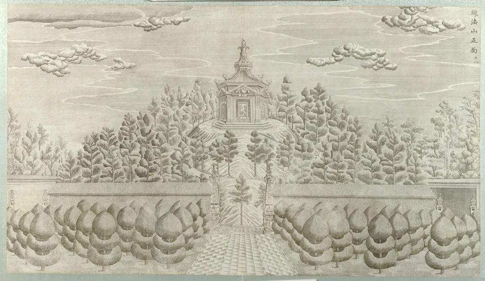
Pictures by side
Plans and views from above
Ruins today


More pictures, and the texts, in the 3D view's panel.
Not ours to copy, at the holder
- Sirén: Illustrated: 272:206 (Imperial Palaces pl. 206) View at kulturarvsdata.se
- 线法门 (spoken in the clip: 这张照片是最新发现的一张线法门的照片) View at commons.wikimedia.org
What is known of its size
| Part | What | Size | How | Grade | Source |
|---|---|---|---|---|---|
| mound, outer ring, along plan x | Diameter | 42.25 m ± 4 | b ruin or plan | C | S01, plan px x 11090-11281, y 1120-1120 |
| mound, outer ring, along plan y | Diameter | 41.09 m ± 4 | b ruin or plan | C | S01, plan px x 11184-11184, y 1021-1218 |
| gap in the wall x=11057: where the gate stands | Frontage | 13.58 m ± 4 | b ruin or plan | C | S01, plan px x 11057-11057, y 1085-1150 |
| gate | Frontage | 13.6 m ± 3 | c engraving | C | S71, S70, S01, plate 17, P0057 |
| cornice | Cornice height | 6.1 m ± 1.4 | c engraving | C | S71, S70, S01, plate 17, P0057 |
| innermost ring | Diameter | 8.85 m ± 4 | b ruin or plan | C | S01, plan px x 11164-11204, y 1101-1141 |
| crown above platform | Ridge or top height | 12.3 m ± 3.3 | c engraving | C | S71, S70, plate 18, P0058 |
| eaves above platform | Cornice height | 6.2 m ± 1.7 | c engraving | C | S71, S70, plate 18, P0058 |
| hilltop pavilion, body | Diameter | 6.9 m ± 1.9 | c engraving | C | S71, S70, plate 18, P0058 |
| platform ring | Diameter | 14.3 m ± 3.8 | c engraving | C | S71, S70, plate 18, P0058 |
All 19 figures
| Part | What | Size | How | Grade | Source |
|---|---|---|---|---|---|
| gap in the wall x=11314 | East gap | 10.83 m ± 4 | b ruin or plan | C | S01, plan px x 11314-11314, y 1093-1145 |
| offset of the row from the ruin | Row offset | 12.18 m ± 4 | b ruin or plan | B | S01, S03, buildings.csv row against ruin |
| hill, foot to platform | Hill h | 7.4 m ± 2.3 | c engraving | C | S71, S70, plate 18, P0058 |
| 线法山 mound | Mound h | 8 m ± 1 | e no survey | C | S310, mhymy /xgjy/3705.html (page inferred from the search tool, not confirmed), search extract |
| 线法山 scene | Site area m2 | 6500 m² ± 500 | e no survey | C | S310, mhymy /xgjy/3705.html (page inferred from the search tool, not confirmed), search extract |
| centre arch | Arch h | 4.3 m ± 1 | c engraving | C | S71, S70, S01, plate 17, P0057 |
| centre arch | Arch w | 2.3 m ± 0.5 | c engraving | C | S71, S70, S01, plate 17, P0057 |
| crown top | Top | 8.7 m ± 2 | c engraving | C | S71, S70, S01, plate 17, P0057 |
| side door | Door w | 1.6 m ± 0.4 | c engraving | C | S71, S70, S01, plate 17, P0057 |
Where the fragments are
No moved piece is documented for it in what we read.
螺蛳牌楼 Luosi PailouEast Gate to Hsien Fa Hill
See it in the 3D viewWhat it was
The east gate of 线法山: three arches, with the side passages leading through side rooms, and vine ornament carved even over the faces of the pillars (S02 p.159). Plate 19 looks east through it to the water and painted hills beyond. The width is not settled: 22.9 m on the plate, 34-49 m for what the plan draws, with no other check (Q16).
After 1860
It stands in Moore's photograph of the 1870s-80s (S838 Fig.6). Ohlmer and Child did not photograph it. Its later fate was not found.
What survives
Nothing located in our sources, and no modern photograph within 100 m on Commons by geotag.
The engraving

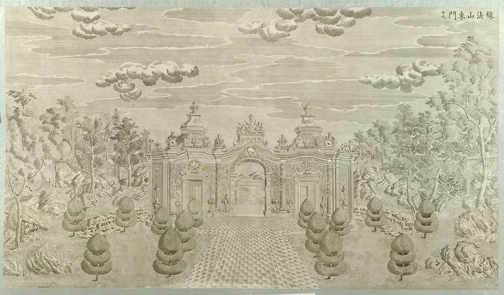
Pictures by side
Plans and views from above
More pictures, and the texts, in the 3D view's panel.
Not ours to copy, at the holder
- Moore negatives of the European palaces, Royal BC Museum MS-3171 (13 negatives, 12 views, c.1875 to early 1880s) View at search-bcarchives.royalbcmuseum.bc.ca
- Sirén: The Imperial Palaces of Peking pl. 208 View at kulturarvsdata.se
What is known of its size
| Part | What | Size | How | Grade | Source |
|---|---|---|---|---|---|
| spine between the cloud ends | Depth | 8.98 m ± 4 | b ruin or plan | C | S01, plan px x 11390-11430, y 1043-1207 |
| spine between the cloud ends | Frontage | 34.14 m ± 4 | b ruin or plan | C | S01, plan px x 11390-11430, y 1043-1207 |
| whole figure with cloud-shaped ends | Depth | 16.4 m ± 4 | b ruin or plan | C | S01, plan px x 11381-11454, y 1008-1242 |
| gate | Frontage | 22.9 m ± 6.2 | c engraving | C | S71, S70, plate 19, P0059 |
| cornice | Cornice height | 6.8 m ± 1.8 | c engraving | C | S71, S70, plate 19, P0059 |
| tower crown | Ridge or top height | 12.3 m ± 3.3 | c engraving | C | S71, S70, plate 19, P0059 |
All 10 figures
| Part | What | Size | How | Grade | Source |
|---|---|---|---|---|---|
| whole figure with cloud-shaped ends | Figure ns | 48.71 m ± 4 | b ruin or plan | C | S01, plan px x 11381-11454, y 1008-1242 |
| centre crown | Top | 11 m ± 3 | c engraving | C | S71, S70, plate 19, P0059 |
| columns | Column h | 5.4 m ± 1.4 | c engraving | C | S71, S70, plate 19, P0059 |
| side door | Door w | 2.1 m ± 0.6 | c engraving | C | S71, S70, plate 19, P0059 |
Where the fragments are
No moved piece is documented for it in what we read.
方河 Fang HeLake of the Hsien Fa picture
See it in the 3D viewWhat it was
A rectangular lake that cut the park off from the perspective walls beyond, so that the painted town was seen across water (S258 p.185, S02 p.159). 145.9 × 51.9 m on the plan.
After 1860
The water was lost and restored. The Changchun lakes were re-dug in 1992-94 (S847); whether this one was among them is not stated. Today's water is 149.2 × 45.0 m (OSM).
What survives
Water on the old site, its north bank about 7 m inside the plan's. The south banks coincide.
The engraving

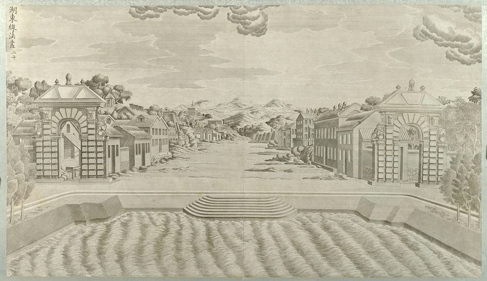
Pictures by side
Plans and views from above
Ruins today

More pictures, and the texts, in the 3D view's panel.
What is known of its size
| Part | What | Size | How | Grade | Source |
|---|---|---|---|---|---|
| basin as drawn | Pool depth (N-S or along) | 51.93 m ± 3 | b ruin or plan | C | S01, plan px x 11568-12211, y 1000-1250 |
| basin as drawn | Pool width | 145.93 m ± 3 | b ruin or plan | C | S01, plan px x 11568-12211, y 1000-1250 |
| water today, N-S | Pool depth (N-S or along) | 44.96 m ± 2 | b ruin or plan | B | S03, osm-way-210646474 |
| water today, W-E | Pool width | 149.22 m ± 2 | b ruin or plan | B | S03, osm-way-210646474 |
| east bank between the corners | Pool depth (N-S or along) | 42.5 m ± 11.5 | c engraving | C | S71, S70, plate 20, P0060 |
All 9 figures
| Part | What | Size | How | Grade | Source |
|---|---|---|---|---|---|
| neck to the south | Neck l | 9.9 m ± 4 | b ruin or plan | C | S01, plan px x 11945-11975, y 1250-1298 |
| neck to the south | Neck w | 6.81 m ± 4 | b ruin or plan | C | S01, plan px x 11945-11975, y 1250-1298 |
| offset of the row from the ruin | Row offset | 5.05 m ± 4 | b ruin or plan | B | S01, S03, buildings.csv row against ruin |
| landing steps, east bank | Stair width | 20.8 m ± 5.6 | c engraving | C | S71, S70, plate 20, P0060 |
Where the fragments are
No moved piece is documented for it in what we read.
线法墙 Xianfa QiangHsien Fa Picture East of the Lake
See it in the 3D viewWhat it was
An outdoor stage: pairs of walls set like wings, narrowing towards a back wall, with a European town painted across them, to be seen from the far side of 方河 (S02 pp.159-160). The plan calls it 线法画. The number of walls is not settled: five a side (S02), six a side on the plan, seven a side in S361, 11 in all on a Lei plan (S310, extract), about 5 on plate 20 (Q16). The paintings' medium is not settled either: "partly modeled and partly painted on walls" in Malone, hung pictures in S361; "oil on brick" has no source (material row).
After 1860
Malone's photograph still shows walls like wings. Later dates were not found.
What survives
Nothing to read on the ground: the place is a car park on today's imagery (S850).
The engraving
Pictures by side
Plans and views from above
Ruins today

More pictures, and the texts, in the 3D view's panel.
What is known of its size
| Part | What | Size | How | Grade | Source |
|---|---|---|---|---|---|
| far wall | Depth | 1.8 m ± 4 | b ruin or plan | C | S01, plan px x 12394-12402, y 1100-1165 |
| far wall | Frontage | 13.51 m ± 4 | b ruin or plan | C | S01, plan px x 12394-12402, y 1100-1165 |
| screen, each | Depth | 1.8 m ± 1 | b ruin or plan | C | S01, plan px 8 x 35 |
| screen, each | Frontage | 7.27 m ± 2 | b ruin or plan | C | S01, plan px 8 x 35 |
| whole set, ranges to ranges | Depth | 37.16 m ± 4 | b ruin or plan | C | S01, plan px x 12240-12405, y 960-1305 |
| whole set, ranges to ranges | Frontage | 71.68 m ± 4 | b ruin or plan | C | S01, plan px x 12240-12405, y 960-1305 |
| first gate | Frontage | 13.9 m ± 3.1 | c engraving | C | S71, S70, plate 20, P0060 |
| first gate, cornice | Cornice height | 13.3 m ± 3 | c engraving | C | S71, S70, plate 20, P0060 |
| first gate, pediment top | Ridge or top height | 16.9 m ± 3.8 | c engraving | C | S71, S70, plate 20, P0060 |
| wall 1, height | Wall height | 8.7 m ± 2.8 | c engraving | C | S71, S70, plate 20, P0060 |
| wall 2, to its ridge | Wall height | 11.5 m ± 3.6 | c engraving | C | S71, S70, plate 20, P0060 |
| north range B0155 | Depth | 5.63 m ± 4 | b ruin or plan | C | S01, plan px x 12300-12381, y 976-1003 |
| north range B0155 | Frontage | 18.23 m ± 4 | b ruin or plan | C | S01, plan px x 12300-12381, y 976-1003 |
| south range B0215 | Depth | 4.97 m ± 4 | b ruin or plan | C | S01, plan px x 12303-12375, y 1276-1300 |
All 32 figures
| Part | What | Size | How | Grade | Source |
|---|---|---|---|---|---|
| south range B0215 | Frontage | 16.23 m ± 4 | b ruin or plan | C | S01, plan px x 12303-12375, y 1276-1300 |
| pitch of the screens along the axis | Screen pitch | 5.23 m ± 1.5 | b ruin or plan | C | S01, plan px |
| screen pair 1 from the lake | Screen offset n | 23.17 m ± 2 | b ruin or plan | C | S01, plan px (12259, 1021) |
| screen pair 1 from the lake | Screen offset s | 24.41 m ± 2 | b ruin or plan | C | S01, plan px (12255, 1250) |
| screen pair 2 from the lake | Screen offset n | 22.34 m ± 2 | b ruin or plan | C | S01, plan px (12275, 1025) |
| screen pair 2 from the lake | Screen offset s | 22.54 m ± 2 | b ruin or plan | C | S01, plan px (12276, 1241) |
| screen pair 3 from the lake | Screen offset n | 19.22 m ± 2 | b ruin or plan | C | S01, plan px (12298, 1040) |
| screen pair 3 from the lake | Screen offset s | 19.84 m ± 2 | b ruin or plan | C | S01, plan px (12299, 1228) |
| screen pair 4 from the lake | Screen offset n | 16.52 m ± 2 | b ruin or plan | C | S01, plan px (12323, 1053) |
| screen pair 4 from the lake | Screen offset s | 17.35 m ± 2 | b ruin or plan | C | S01, plan px (12322, 1216) |
| screen pair 5 from the lake | Screen offset n | 13.61 m ± 2 | b ruin or plan | C | S01, plan px (12348, 1067) |
| screen pair 5 from the lake | Screen offset s | 13.61 m ± 2 | b ruin or plan | C | S01, plan px (12348, 1198) |
| screen pair 6 from the lake | Screen offset n | 10.08 m ± 2 | b ruin or plan | C | S01, plan px (12375, 1084) |
| screen pair 6 from the lake | Screen offset s | 10.91 m ± 2 | b ruin or plan | C | S01, plan px (12375, 1185) |
| wall pair 1, off axis | Screen offset | 23.1 m ± 6.2 | c engraving | C | S71, S70, plate 20, P0060 |
| wall pair 2, off axis | Screen offset | 23 m ± 6.2 | c engraving | C | S71, S70, plate 20, P0060 |
| walled plot of 线法墙, 方河, 螺蛳牌楼, E-W, Lei plan | Plot ew | 259.2 m ± 1 | e no survey | B | S310, mhymy /dasl/ysltd/12410.html, search extract |
| walled plot of 线法墙, 方河, 螺蛳牌楼, N-S, Lei plan | Plot ns | 60.8 m ± 0.5 | e no survey | B | S310, mhymy /dasl/ysltd/12410.html, search extract |
Where the fragments are
No moved piece is documented for it in what we read.
Where the fragments are:
- Seven openwork balustrade or stair-rail posts, called 石柱 or 'columns' in the press; white marble with relief flowers and scrolling geometric ornament, about 0.8 to 0.92 m high
Now at: Yuanmingyuan: shown at 正觉寺 from 13 Oct 2023; 圆明园博物馆. - 71 stone pieces, the display 残雕沉思 in the Xiyang Lou area
Now at: 西洋楼 遗址区. - Stone plaque 熙春洞 in Qianlong's hand (NOT Xiyang Lou fabric, though it stood beside it)
Now at: Returned from 翠园 in April 2018; planned for 天心水面 display. - 华表 of 安佑宫: white marble, about 8 m high, octagonal 须弥座 1.24 m high, cloud and coiled-dragon relief. NOT Xiyang Lou
Now at: Two at Peking University before the 办公楼 inside the west gate; the other two at the National Library on 文津街. - Stone left in the ruin after the 1980s clearance: state as cleaned up, not as found
Now at: Xiyang Lou site. - V&A C.382-1912: glazed shell with scrolls and leaf at the sides, on a triangular plan, 34.5 × 38 × 23 cm. The record's material says stoneware with turquoise glaze, its description earthenware: conflict inside the record
Now at: Victoria and Albert Museum, London. - V&A C.375-1912 (shell, 7.5 in wide), C.376-1912 (bird's feathers in high relief, 6.75 in), C.377-1912 (flower, 5.5 in), C.378-1912 (band in relief, 3.625 in): pieces of the same six-piece Wylde lot
Now at: Victoria and Albert Museum, London. - V&A 186-1904: part of a brick moulded with leaf scrolls on two sides, yellow glaze on five sides, 19.4 × 7.6 cm; 185-1904: part of a round medallion with part of a dragon, turquoise-blue, 7.9 cm across
Now at: Victoria and Albert Museum, London. - Glazed capitals and ornament photographed in the park's store in 1983 by Rabreau: figs 43-48, capital and ornament in glazed ceramic
Now at: Park store (1983). - Abroad, what is NOT Xiyang Lou stone: Fontainebleau's 中国馆 (1863 on) holds objects taken in 1860 (enamel, gold dragons, jade), never building stone; a Paris museum, 康有为's 欹规味 and 薛福成's 东方博物院 (Guimet, by my reading of the name): 玉印 and objects; British Museum and V&A enamels and lacquer per Bushell 1904-05. These are objects from the garden's stores, not from the European palaces' fabric
Now at: Fontainebleau, Guimet, BM, V&A. - 办公楼 forecourt at PKU: 丹墀 / 丹陛石 and a pair of stone 麒麟. University pages say 载涛 took them from the garden to 朗润园; Malone says some marble from the Ancestral Shrine 安佑宫 stands at Yenching. NOT Xiyang Lou
Now at: Peking University, before 办公楼. - 兰亭八柱碑亭 (八角 stone pavilion with eight inscribed pillars), and 青云片 stone. NOT Xiyang Lou
Now at: 北京 中山公园, 来今雨轩 west. - 汉白玉 balustrades of the Xiyang Lou, part
Now at: 圆明园.
Sources cited on this page (44)
- S01 Plan of the Yuanmingyuan Imperial Garden-Palace, unknown artist, three hanging scrolls, ink and colour on paper, 177 × 253 cm together
- S02 Carroll Brown Malone, History of the Peking Summer Palaces under the Ch'ing Dynasty, Illinois Studies in the Social Sciences XIX, Urbana 1934; reprint Paragon 1966
- S03 OpenStreetMap, the park and neighbours, Overpass
- S06 zh.wikipedia 圆明园, 圆明园四十景, 长春园, 绮春园, 西洋楼
- S42 梦回圆明园 mhymy.com: 档案史料 reports (11301, 11446, 11467, 11480, 11559, 11828, 12205, 12324, 12600, 12613, 12739) and scene list /ymss/jqjs/ymy
- S70 Wikimedia Commons, categories Old Summer Palace, Yuanmingyuan, Forty Scenes, engravings
- S71 圆明园铜版画册, Palace Museum 228650, 20 leaves, 50.5 x 87.5 cm
- S89 Ohlmer photographs (Commons copies)
- S90 Régine Thiriez, Barbarian Lens
- S91 C. F. Moore fonds, Royal BC Museum MS-3171 (blog: visualisingchina.net 2022-05-15)
- S108 Gao Ming et al., Digital restoration ... Xieqiqu, ISPRS Annals II-5/W3
- S109 刘阳, 《圆明园的故事》 excerpt, 澎湃
- S110 人民网, 海晏堂蓄水楼加固
- S141 浙江在线, 考古推进至大水法
- S153 北京市文物研究所, 远瀛观遗址考古发掘简报, mhymy
- S245 Paul Varin, Expédition de Chine, Paris: Michel Lévy, 1862
- S258 [Louis-François] Delatour, Essais sur l'architecture des Chinois, sur leurs jardins, leurs principes de médecine, et leurs moeurs et usages, Paris: Clousier, 1803
- S310 梦回圆明园 mhymy.com, 档案史料 > 样式雷图档 /dasl/ysltd/: per-drawing records (图名, 图幅, 款式, 图纸性质, 绘制年代, 收藏机构, 排架编码) with a description, for drawings held by NLC 国家图书馆善本部, 故宫博物院图书馆, 清华大学
- S337 中国人民大学清史研究所 清代皇家园林研究中心, 学术综览 (xstl, lswh, jzys, ylfj, wxda, hwyj): reposted articles, 397 listed, 121 fetched
- S361 何瑜 (cover name; 编著 as on the volumes), 圆明园五朝御制诗文集注, vols 2-4 of the first four volumes, PDF on the park's site: the imperial poems and essays of five reigns by scene, wit
- S415 Daniel Rabreau, Le jardin à l'européenne du Yuanming Yuan, essai sur un chef-d'œuvre de l'art des jésuites à la cour de Qianlong au XVIIIe siècle, GHAMU, ISBN 978-2-49108
- S593 Yanqiu L., Jinliang X., Hai Q. (Tsinghua Heritage Institution For Digitization), Research on the protection of Haiyan Hall earthen stereobate relic site at Yuanmingyuan P
- S600 Shingei Katsu (University of Tokyo), On the Construction of the Hydraulic Machinery in the European Palaces of Yuanmingyuan, Journal of Architecture and Planning (Transac
- S603 A. Durand, Restitution des palais europeens du Yuanmingyuan, Arts asiatiques 43, 123-133
- S604 Michele Pirazzoli-t'Serstevens (chef de mission), Anne Chayet and others, Le Yuanmingyuan: jeux d'eau et palais europeens du XVIIIe siecle a la cour de Chine, Editions Re
- S736 Albert Koenig 黃立人, lecture summary: 歐洲耶穌會傳教士設計的西洋樓水法系統, on mhymy; talk abstract at Academia Sinica 明清研究, The Jesuit Water Works at the European Palaces (Xiyanglou) of Yua
- S770 The Garden of Perfect Brightness 3: Destruction, Looting, and Memory, MIT Visualizing Cultures, section Ernst Ohlmer's 1873 Photos of the Ruins (pages e501-e503)
- S814 北京日报 (王谌, 吴镝) via 人民政协网, 圆明园两件御笔文物回家, 2018-04-24
- S815 北京旅游网 visitbeijing.com.cn, article on the 圆明园 relic recovery team, c
- S817 上游新闻 via 腾讯新闻, long report on relics returned to 圆明园, drawing on 北京日报 with its photographs, 2023-10-14
- S819 北京旅游网, 北大 and 清华 guide article (翻尾石鱼)
- S820 北京旅游网 (北京日报 text), 圆明园管理处 history and 2020s exhibits, 2022-08-25
- S821 孙毅, 利用3D激光扫描技术 为圆明园散落石块找'归宿', 北京晚报 2017-07-18, on tsinghua.edu.cn; interview with 肖金亮, 清华同衡
- S822 中国新闻网 (新京报 text), 七大兽首回归：海外流失文物的艰难追索, 2022-07-28
- S823 澎湃号·政务, 文化：圆明园十二兽首铜像介绍, reprinting the 2019 文化和旅游部 notice on the horse head
- S828 T. Choutzé (pseudonym, as printed), article on Peking and north China, Le Tour du Monde, 1876, p.231, as quoted in Rabreau (S415) p.68
- S838 Jamie Carstairs (University of Bristol Library), Charles Frederick Moore's photographs of the ruins of the European-style palaces at the Yuanmingyuan, Visualising China b
- S839 北京大学 房地产管理部 燕园文物, 引水石槽 (stone trough, page fdcb 6b007979)
- S840 北京大学 房地产管理部 燕园文物, 翻尾石鱼 Roll-Tailed Stone Fish
- S841 China Daily, Old Summer Palace stones to be reinforced, 2018-05-24
- S847 陈名杰, 圆明园遗址公园保护建设成就与发展思路, on the site of 中国人民大学清史研究所 清代皇家园林研究中心, posted 2015-08-28
- S849 人民日报海外版, 圆明园四兽首在香港展出, 2023-07-15
- S850 Esri World Imagery, tiles z18 over the Xiyang Lou strip, read by eye for ruin outlines and positions; winter image, some snow, resolution about 0.46 m per pixel
- S873 圆明园长春园铜版画精赏, 梦回圆明园 mhymy.com /xsjl/7129, drawing on 翁连溪 and palace workshop records as the page says